<div class="initial-content">
  <div id="main" role="main">

  <article class="page has-sidebar" itemscope itemtype="https://schema.org/CreativeWork">
    <meta itemprop="headline" content="Go Software Engineering and Automation with Oracle Cloud Infrastructure DevOps">
    
    <meta itemprop="datePublished" content="2022-05-26T11:00:00+00:00">
    


    <header>
      <h1 id="page-title" class="page__title" itemprop="headline">Go Software Engineering and Automation with Oracle Cloud Infrastructure DevOps
</h1>
      


    </header>

    <section class="page__content" itemprop="text">
      

        <picture class="alignright">
                <source srcset="assets/way-to-go-on-oci-article-2-thumbnail-overview.png 1x" />
                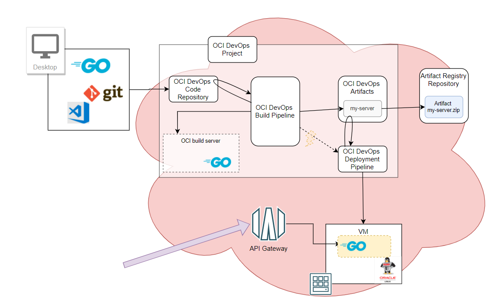
            </picture>

<p>This is the second installment in a five part series about Go and Oracle Cloud Infrastructure. This series discusses how Go applications can be created and run on Oracle Cloud Infrastructure (OCI) – in Compute Instances (VMs), containerized on Kubernetes, or as serverless Functions. The articles show how to automate the build and deployment of these Go applications using OCI DevOps. An important topic is how to use OCI services from Go applications – both those running on OCI as well as Go code running elsewhere. The OCI services discussed include Object Storage, Streaming, Key Vault and Autonomous Database.</p>

<p>In order to follow along with these articles, readers should have at least basic knowledge of how to create Go applications. It is assumed that readers have access to their own Go development environment. Some of the examples and screenshots will specifically mention VS Code as a development tool. However, other editors and IDEs can be used as well. The Go code presented in these articles demonstrates a number of mechanisms in their simplest form for maximum clarity and with the least dependencies. Readers should not expect meaningful functionality or production-ready code.</p>

<p>The articles describe how to get Going on OCI. To try out the examples, readers will need to have access to an OCI tenancy with permissions to create the OCI resources discussed in these articles. Most of the resources used are available in the <em>Aways Free Tier</em> (Compute Instance, VCN, Autonomous Database, Object Storage, Logging, Resource Manager) or have a free allotment tier for limited monthly usage (Functions, API Gateway, Streaming, Vault, DevOps).</p>

<h2 id="introduction">Introduction</h2>

<p>The first part of this article describes the provisioning of a Compute instance based on the Oracle Linux Cloud Developer image, opening it up for inbound and outbound network activity, creating and running a Go application that serves HTTP requests, and connecting logging produced by the application to OCI Logging. This part takes the software engineering, build, and deployment of the application to the next level, using the Compute instance created in the previous installment. Automation is the name of the game, and the OCI DevOps service is introduced for storing the Go source code, building the application executable and storing it as deployable artifact, and deploying that artifact to the Compute instance. The last step in this article is exposing an HTTP endpoint for that application through an OCI API Gateway.</p>

<p>The detailed steps in this article:</p>

<ul>
  <li>
    <p>Set up the OCI DevOps project with the artifact registry and source code repository</p>
  </li>
  <li>
    <p>Load the application resources for the Go application as code resources for the OCI resources into the source code repository</p>
  </li>
  <li>
    <p>Create OCI DevOps Build Pipeline for producing a deployable artifact from Go source code; include Go fumpting/linting and testing in the pipeline. Deliver the artifact to the OCI Artifact Repository. Trigger the pipeline manually, to see it in action; watch lint and test. Verify the artifact that is produced.</p>
  </li>
  <li>
    <p>Create an OCI DevOps Deployment Pipeline that takes the built Go app artifact – a binary executable – and deploys it to the VM (and makes it run). Add a trigger of the Deployment Pipeline in the Build Pipeline.
Manually trigger the build pipeline. The Go application is deployed to the VM.</p>
  </li>
  <li>
    <p>Create API Gateway with a new API Deployment with a route for the HTTP endpoint exposed by the Go app that was just deployed to the VM. Check out HTTP calls to the now public API – see them handled. Apply a little request manipulation in the API Gateway’s route to the Go application</p>
  </li>
</ul>

<h2 id="create-devops-project-with-code-repository-and-artifact-registry">Create DevOps Project with Code Repository and Artifact Registry</h2>

<p>The Oracle Cloud Infrastructure (OCI) DevOps service is an end-to-end, continuous integration and continuous delivery (CI/CD) platform for developers. It provides code repositories, build servers that run automated CI/CD pipelines, an artifact registry for storing the deployable built artifacts and deployment pipelines that rollout new software to OCI environments. The starting point in OCI DevOps is a project – a logical grouping of DevOps resources needed to implement a CI/CD workflow. DevOps resources can be artifacts, build pipelines, deployment pipelines, external connections (to GitHub or GitLab code repositories), triggers (definitions of events that should trigger a build pipeline or a deployment pipeline), and environments (into which deployment is performed – a Function application, a group of Compute instances, or a Container Engine for Kubernetes (OKE) cluster).</p>

<p>Using OCI DevOps is largely free. However, you do have to pay for the build server – but only the pay-per-use compute costs and the network traffic to and from outside OCI boundaries. Running the Deployment Pipelines is not charged to you. Of course, the runtimes to which the applications are deployed need to be paid for, and the storage required for the Artifact Registry as well as the Container Registry is charged to your cloud account as well.</p>

<h3 id="create-devops-project">Create DevOps Project</h3>

<p>Before we can create a DevOps project, we first need to create a Topic in the Notifications service. Messages representing events in OCI services, alarms that get triggered, or messages explicitly produced by custom application components are asynchronously published on a Topic and subsequently delivered to subscribers to the Topic. Project Notifications are published to a Topic to keep you apprised of important events and the latest project status. They also alert you if you need to take any necessary action such as approving a workflow. You must therefore create a Topic and add a subscription to the topic.</p>

<p>Open the OCI console. Type <em>notific</em> in search field; then navigate to <em>Notifications</em>. Click on the button <em>Create Topic</em>. Enter the name of the topic – for example <em>devops-topic</em> – and optionally provide a description of the topic. Click on <em>Create</em> to have the topic resource provisioned.</p>

<p>The newly created Topic is shown in the console. Click on the name to navigate to the details page. Click on <em>Create Subscription</em> to create a subscription and have emails sent to your email address for DevOps project events that require your attention.</p>

<blockquote class="notice">
  <p>Note: in addition to email, subscriptions can also be created for Slack, PagerDuty, web hook, SMS and OCI Functions.</p>
</blockquote>

<p>Click on <em>Create</em> to create the subscription.</p>

<p>The new subscription is shown with the status <em>Pending</em>. The subscription only becomes active when the email address is confirmed. Check your mailbox. You should find an email from OCI that invites you to confirm your subscription. When you click the link in the email (or copy the url for the link to a browser window), you are taken to a web page which informs you that the subscription was confirmed. At this point, messages published to the topic will be relayed as email to the address you have subscribed with.</p>

<figure class="aligncenter">
              <picture>
                  <source srcset="assets/way-to-go-on-oci-article-2-email-subscription-confirmation.png 1x" />
                  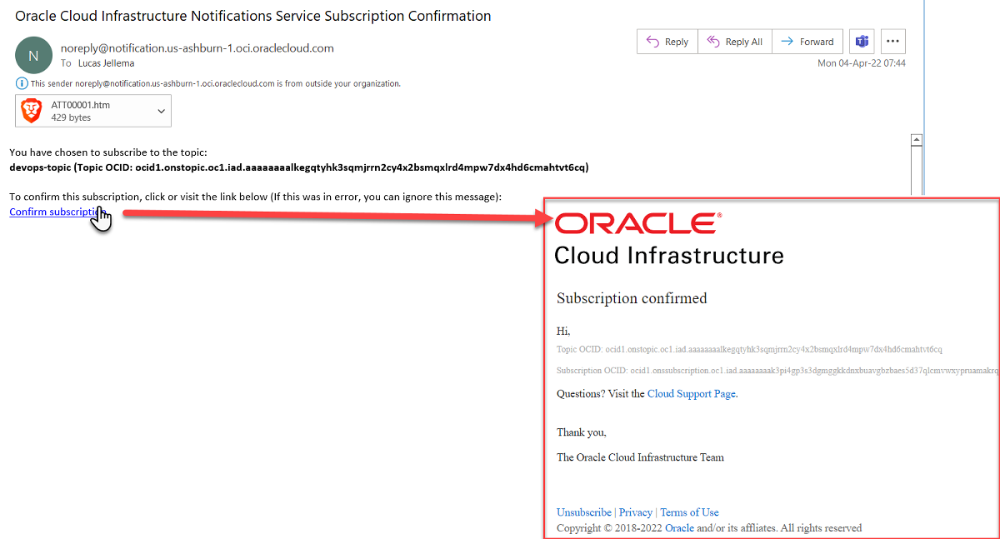
              </picture>
              <figcaption>Email invitation to confirm subscription on topic</figcaption>
            </figure>

<p>Now, let’s create a DevOps project. Ensure that the context compartment is the right one – in my case <em>go-on-oci</em>, created in part 1 of this series. Type <em>devops</em> in the search field; then navigate to <em>Overview</em>. An overview is shown of all DevOps projects (probably none at this point).</p>

<p>Click on the button Create DevOps Project.</p>

<figure class="aligncenter">
              <picture>
                  <source srcset="assets/way-to-go-on-oci-article-2-createdevopsproject.png 1x" />
                  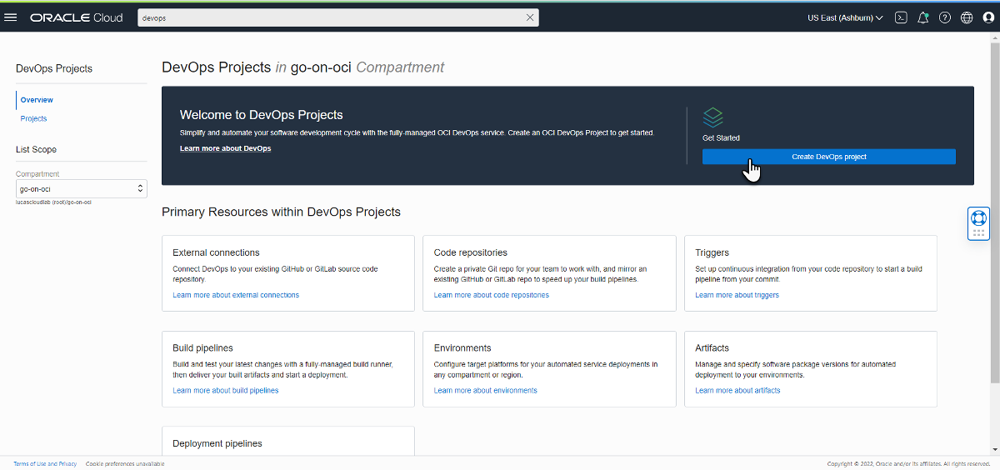
              </picture>
              <figcaption>Start creation of a new DevOps project</figcaption>
            </figure>

<p>Type the name of the project, e.g. <em>go-on-oci</em>, and optionally enter a description: “Resources for the Way to Go on OCI application”.</p>

<p>Click on <em>Select Topic</em> and select the Topic you have just created. Then click on <em>Create DevOps Project</em>.</p>

<figure class="aligncenter">
              <picture>
                  <source srcset="assets/way-to-go-on-oci-article-2-create-devopsproject2.png 1x" />
                  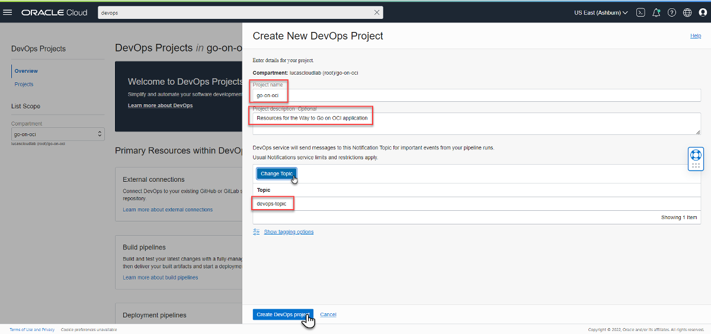
              </picture>
              <figcaption>Enter details for the new DevOps project</figcaption>
            </figure>

<p>The DevOps project is created. Its overview page is shown.</p>

<figure class="aligncenter">
              <picture>
                  <source srcset="assets/way-to-go-on-oci-article-2-devopsproject-created.png 1x" />
                  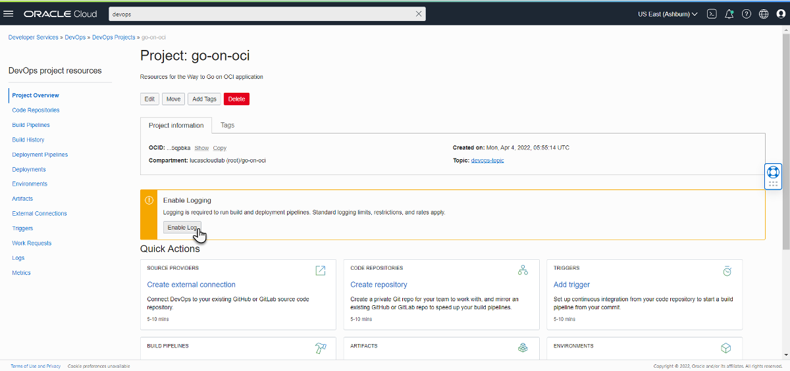
              </picture>
              <figcaption>Enable logging for freshly created DevOps project</figcaption>
            </figure>

<p>One last step to complete the project definition: enable logging. Click on the button <em>Enable Log</em>. This takes you to a tab labeled <em>Logs</em>. Toggle the switch to <em>Enable Log</em>.</p>

<p>This brings up a pane where the Log Group and the name of the Log are defined. In article 1 of this series, we created a Log Group <em>go-on-oci-logs</em> which can serve us now. If you want to use a different Log Group or do not have that group available (anymore), click on the link <em>Create New Group</em>. Provide a name for the Log. Then click on <em>Enable Log</em>.</p>

<figure class="aligncenter">
              <picture>
                  <source srcset="assets/way-to-go-on-oci-article-2-enable-logging.png 1x" />
                  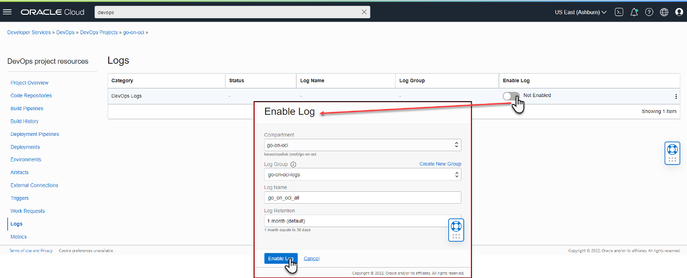
              </picture>
              <figcaption>Toggle the DevOps Logs enabled switch to the on position</figcaption>
            </figure>

<p>The new log is shown with status <em>Creating</em>. After a minute or so, the status will be be updated to <em>Active</em>. Now the DevOps project is fully primed, ready for some action.</p>

<p>Note: to allow other users to access the DevOps Project, you need to set up the correct policies. Read <a href="https://docs.oracle.com/en-us/iaas/Content/devops/using/getting_started.htm#getting_started_with_devops">details about how go get started with the DevOps service in the OCI Documentation</a>.</p>

<h3 id="create-code-repository">Create Code Repository</h3>

<p>OCI DevOps offers Git-style code repositories — similar to GitHub, GitLab or Azure DevOps. You only pay for storage, no additional charges for the Git repository overhead. You get a Git repo that you access securely from your command line or local Git GUI tool, just like you’re used to. Or through a simple, straightforward browser UI that, for example, allows searching for sources, commits and inspecting pull requests. Although this UI is clearly not meant to be your next Git power tool, it can still be quite convenient for some quick browsing.</p>

<p>On the DevOps project overview page, click on the card <em>Create repository</em>. Enter the name for the repository – for example <em>go-on-oci-repo</em> and optionally a description. Then click on the button <em>Create repository</em>.</p>

<p>After a few seconds, the details for the new code repository appear. The repository is empty at this point, and it cannot yet be cloned to your local environment. You first need to create an authentication token that can be used for connecting your local Git tooling to this OCI Code Repository.</p>

<p>Before you create that token (or reuse a token), click on the button <em>HTTPS</em>. A command is now shown for cloning the new Git code repository. The command looks like:</p>

<div class="language-console highlighter-rouge"><div class="highlight"><pre class="highlight"><code><span class="go">git clone https://devops.scmservice.us-ashburn-1.oci.oraclecloud.com/namespaces/idtwlqf2hanz/projects/go-on-oci/repositories/go-on-oci-repo
</span></code></pre></div></div>

<p>Note that your region key and namespace will be different.</p>

<p>To create an Authentication Token, follow these steps:</p>

<ol>
  <li>In the top-right corner of the Console, open the Profile menu and click User Settings</li>
  <li>Under Resources, click Auth Tokens</li>
  <li>Click Generate Token. Enter a description that indicates what this token is for</li>
  <li>Click Generate Token</li>
</ol>

<p>The new token string is displayed. Copy the token immediately to a secure location from which you can retrieve it later – you will not see the token again in the Console.</p>

<p>You can now clone the code repository to create a local copy on your computer, add or remove files, commit changes, and work on different branches by using Git operations. To clone the repository using HTTPS, copy the displayed URL to a local terminal window in an environment with <code class="language-plaintext highlighter-rouge">git</code> set up.</p>

<p>Upon running the command, the clone operation initiates and you’ll be prompted for the username. If you use direct sign-in for logging in to OCI, the username you need to enter is <code class="language-plaintext highlighter-rouge">tenancy/username</code>, e.g. <code class="language-plaintext highlighter-rouge">unicorn-lab/archimedes@rockstars.nl</code>. If you connect to OCI through an identity provider – a federated login – then the username required here consists of <code class="language-plaintext highlighter-rouge">tenancy/identityprovider/username</code>, e.g. <code class="language-plaintext highlighter-rouge">lucascloudlab/oracleidentitycloudservice/lucas@rainbowmail.nl</code>.</p>

<p>When prompted for your password, paste the authentication token that you created earlier and saved for this purpose.</p>

<p>The repository will now be cloned from OCI DevOps to your local machine and your access through Git is configured locally. To stop Git from prompting you for credentials with every operation against the remote repository, you can run</p>

<div class="language-console highlighter-rouge"><div class="highlight"><pre class="highlight"><code><span class="go">git config --global credential.helper store
</span></code></pre></div></div>

<p>Then perform a <code class="language-plaintext highlighter-rouge">git pull</code>, log in one more time, and from now on <code class="language-plaintext highlighter-rouge">git</code> has the login details and will no prompt you again.</p>

<p>As an aside: an OCI Code Repository can also be set up as a mirror for another Git repository on GitHub or GitLab. This means that changes to this existing Git repo are replicated to the Code Repository on OCI and can trigger the pipeline in OCI DevOps. The other benefit of doing this is it speeds up the build process: when the build needs to fetch the sources from the repo, it will be able to do so much faster from a nearby OCI Code Repository than from a further-removed GitHub or GitLab repository.</p>

<h3 id="create-artifact-registry">Create Artifact Registry</h3>

<p>An artifact registry is used to store the deliverables from build pipelines and any other artifact that we need to perform successful deployments. More generally, an Artifact Registry is a repository service for storing, sharing, and managing software development packages. Artifacts are grouped into repositories, which are collections of related artifacts. Artifacts can be uploaded and downloaded, versioned, and hashed for identification and mutation check.</p>

<p>To create a new Artifact Registry, type <em>registr</em> in the Console search bar. Click on the link <em>Artifact Registry</em>.</p>

<p>Click <em>Create repository</em>. In the Create repository dialog box, specify details for the new repository, or at least specify its name, e.g. <em>go-on-oci-artifacts-repo</em>.</p>

<p>Click on <em>Create</em> to create the new artifact repository.</p>

<h2 id="deployment">Deployment</h2>

<p>In a bit we’ll talk about the Build Pipeline that takes sources from the code repository and uses them to produce correct and deployable artifacts and subsequently triggers a deployment pipeline. First we’ll focus on the deployment process.</p>

<p>In OCI DevOps projects, three elements are needed to perform a successful deployment:</p>

<ol>
  <li>A target environment must have been defined; this can be a Kubernetes cluster (an OKE instance), a Function or a Compute Instance (or group of instances, VMs or bare metal machines). The Deployment Pipeline needs specific IAM policies to be allowed to act upon target environment.</li>
  <li>One or more artifacts – files that are part of the application that is to be deployed, including scripts needed to run for preparing the deployment or runtime context. Artifacts are used from a repository, either an OCI Container Image Registry, or an OCI Artifact Registry repository.</li>
  <li>The deployment pipeline that defines the steps to perform.</li>
</ol>

<p>For deployment to a Compute instance, we also need a deployment configuration file – a YAML file that defines the commands to copy the artifacts to their specific locations on the Compute instance’s file system and the statements to execute for configuring the environment and running the application.</p>

<h3 id="environments--policies">Environments &amp; Policies</h3>

<p>In our case the deployment will take place on the same Compute instance we used before. We configure the deployment pipeline later on for environments defined in the DevOps Project. An <em>environment</em> in the DevOps project represents a real environment – OCI Function, OCI Kubernetes Cluster or (group of) OCI Compute instances, such as in our case. Deploy stages in a pipeline of type <em>Deploy – Instance Group</em> are associated with an <em>environment</em> of type <em>Instance Group</em>.</p>

<p>Navigate to the <em>Environments</em> tab in the DevOps Project. Click on the button <em>Create Environment</em>. Click on the tile <em>Instance Group</em>. Provide a name, e.g. <em>go-on-oci-vm</em>, and optionally a description. Click on <em>Next</em>.</p>

<p>On the second page of this <em>Create environment</em> wizard, click on <em>Add instance</em>. In the <em>Instance selection pane</em> that appears, locate the Compute instance, select it, and click on <em>Add instance</em>. Finally, click on the button <em>Create Environment</em> to complete the wizard.</p>

<h4 id="iam-dynamic-groups-and-permission-policies">IAM Dynamic Groups and Permission Policies</h4>

<p>The Deployment Pipeline needs permissions to act upon the Compute instance into which it has to deploy. These permissions are defined through policies which grant the permissions to a dynamic group. The Deployment Pipeline is made member of that dynamic group – the recipient of the policy’s permissions.</p>

<p>To create the dynamic group, type <em>dyn</em> in the search bar. Click on the link <em>Dynamic Groups</em> in the search results pane.</p>

<p>On the overview page for dynamic groups, Click on the button <em>Create Dynamic Group</em>.</p>

<p>Enter the name for the Dynamic Group for the Deployment Pipeline(s), e.g. <em>deploy-pipelines-for-go-on-oci</em>, and optionally type a description. Define the following rule which selects all deployment pipelines that are part of the compartment (in this case we have not even created a single deployment pipeline, but we soon will):</p>

<div class="language-plaintext highlighter-rouge"><div class="highlight"><pre class="highlight"><code>All {resource.type = 'devopsdeploypipeline', resource.compartment.id = '&lt;compartment_id&gt;'}
</code></pre></div></div>

<p>Of course, replace <code class="language-plaintext highlighter-rouge">&lt;compartment_id&gt;</code> with the identifier of the compartment you are working in. Then press <em>Create</em>.</p>

<p>It is convenient to define the dynamic group in this broad fashion, simply including all resources in the compartment of type deployment pipeline. In a realistic environment, I recommend defining dynamic groups and policies that are as fine-grained as possible as to not grant more permissions than are needed.</p>

<table>
  <tbody>
    <tr>
      <td>Next, to create a policy in the console: type <em>poli</em> in the search bar and click on *Policies</td>
      <td>Identity* in the <em>Services</em> area in the search results popup. This takes you to the <em>Policies</em> overview page for the current compartment.</td>
    </tr>
  </tbody>
</table>

<p>The first policy defines the permission for the deployment pipelines to access resources in the compartment. Create a new policy, type a name, a description and the following statement:</p>

<div class="language-plaintext highlighter-rouge"><div class="highlight"><pre class="highlight"><code>Allow dynamic-group deploy-pipelines-for-go-on-oci to manage all-resources in compartment &lt;compartment_name&gt;
</code></pre></div></div>

<p>The definition as shown here is again quite broad. You further restrict the access to resources by specifying the type of resource or other restrictive conditions.</p>

<p>A second policy defines the permission for the deployment pipelines to retrieve artifacts from artifact registry repositories in the current compartment. Again, you need to provide a name and a description. Then define the policy statement as follows:</p>

<div class="language-plaintext highlighter-rouge"><div class="highlight"><pre class="highlight"><code>Allow dynamic-group deploy-pipelines-for-go-on-oci to read all-artifacts in compartment &lt;compartment_name&gt;
</code></pre></div></div>

<p>We need another policy to make it possible to access the artifacts from the artifact registry repository. This policy defines the permission for the dynamic group of Compute instances – as defined in the previous installment of this article as <em>go-on-oci-instances</em> – to retrieve generic artifacts from artifact registry repositories in the current compartment. This may come as a bit of a surprise: should not only the deployment pipeline have the permission to read the artifacts? As it happens: deployment takes place on the Compute instance and artifact retrieval is done from that instance. Therefore the policy has to allow the instance to read the generic artifact.</p>

<p>Again, you need to provide a name and a description. Then define the policy statement as follows:</p>

<div class="language-plaintext highlighter-rouge"><div class="highlight"><pre class="highlight"><code>Allow dynamic-group go-on-oci-instances to read all-artifacts in compartment &lt;compartment_name&gt;
</code></pre></div></div>

<p>The deployment pipeline is executed on the Compute instances through the cloud agent running on the instance. This next policy enables use of the instance agent execution facility on the Compute instances in the dynamic group. Type a name – <em>go-on-oci-instances-can-run-command</em> – and a mandatory description. Then define the policy (replacing the placeholder with the actual name of the compartment):</p>

<div class="language-plaintext highlighter-rouge"><div class="highlight"><pre class="highlight"><code>Allow dynamic-group go-on-oci-instances to use instance-agent-command-execution-family in compartment  &lt;compartment_name&gt;
</code></pre></div></div>

<p>This diagram visualizes the dynamic groups and policies that are now in place.</p>

<picture class="aligncenter">
                <source srcset="assets/way-to-go-on-oci-article-2-deployment-pipeline-policies.png 1x" />
                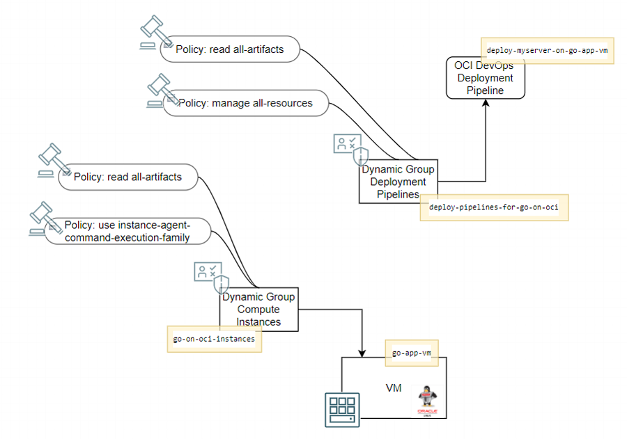
            </picture>

<h4 id="oracle-cloud-agent-and-run-command-plugin">Oracle Cloud Agent and Run Command Plugin</h4>

<p>The Compute Instance <em>Run Command plugin</em> must be enabled on the VM, and the plugin must be running for the Deployment Pipeline to be able to have commands executed on the instance. You can check and enable this on the Oracle Cloud Agent tab in the Compute instance details page in the console. For the <em>Compute Instance Run Command plugin</em>, make sure the <em>Enabled Plugin</em> switch is in the <em>Enabled</em> setting. It takes up to 10 minutes for the change to take effect.</p>

<picture class="aligncenter">
                <source srcset="assets/way-to-go-on-oci-article-2-runcommand-plugin.png 1x" />
                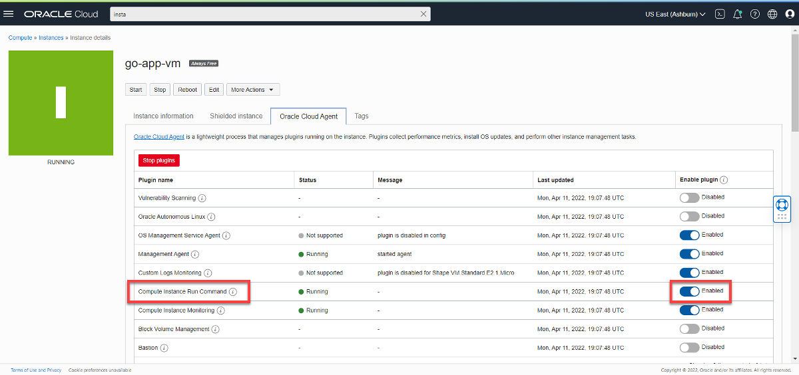
            </picture>

<h3 id="artifacts">Artifacts</h3>

<p>Before too long, we will be using a DevOps Build Pipeline to generate the deployable artifacts that the Deployment Pipeline can then take and install in the target runtime environment. However, for now we will settle for a hand crafted artifact – created from the source code discussed in the previous installment of this series.</p>

<p>Using any SSH client – and perhaps most conveniently the <em>SSH FS</em> extension in VS Code – open an SSH connection to the OCI Compute instance that was set up in the previous article. You may have called it <em>go-app-vm</em>.</p>

<p>You created a directory <code class="language-plaintext highlighter-rouge">myserver</code> as part of the steps in this article. Navigate into this directory, that should contain the file <code class="language-plaintext highlighter-rouge">my-server.go</code>.</p>

<p>Now build the Go application into an executable:</p>

<div class="language-plaintext highlighter-rouge"><div class="highlight"><pre class="highlight"><code>go build -o my-server
</code></pre></div></div>

<p>This produces a local executable file called my-server, of close to 7 MB. That may seem large. But consider: this file is the entire application. It can run by itself, without any special requirements on a preinstalled runtime environment or virtual machine.</p>

<p>Run the file with the following command</p>

<div class="language-plaintext highlighter-rouge"><div class="highlight"><pre class="highlight"><code>./my-server
</code></pre></div></div>

<p>The web server will be up and running. With this next command, you can verify that the executable is running as intended.</p>

<div class="language-plaintext highlighter-rouge"><div class="highlight"><pre class="highlight"><code>curl localhost:8080/greet
</code></pre></div></div>

<p>Let us now create a an artifact we can use for automated deployment later on. In the current directory – that contains the executable <code class="language-plaintext highlighter-rouge">my-server</code> and the subdirectory <code class="language-plaintext highlighter-rouge">website</code>.</p>

<p>These commands create the zip file <code class="language-plaintext highlighter-rouge">my-server.zip</code>, that will be the artifact used in the deployment pipeline we are about to create:</p>

<div class="language-plaintext highlighter-rouge"><div class="highlight"><pre class="highlight"><code>zip -r my-server.zip website
zip -rv my-server.zip my-server
</code></pre></div></div>

<p>To show contents of new zip file, execute:</p>

<div class="language-plaintext highlighter-rouge"><div class="highlight"><pre class="highlight"><code>zip -sf  my-server.zip
</code></pre></div></div>

<p>In order to deploy the application now contained in zip file in the deployment pipeline, we need to make sure this artifact is loaded into the artifact registry.</p>

<p>Move the zipfile into the <code class="language-plaintext highlighter-rouge">website</code> directory under <code class="language-plaintext highlighter-rouge">myserver</code>.</p>

<p>Make sure the application <code class="language-plaintext highlighter-rouge">my-server</code> is running, so we can use our own application to download the zip-file from the Compute instance. Download the zip-file to your local environment through a curl command on the command line or through the browser:</p>

<div class="language-plaintext highlighter-rouge"><div class="highlight"><pre class="highlight"><code>http://&lt;public ip of the Compute instance&gt;:8080/site/my-server.zip
</code></pre></div></div>

<p>Stop the <em>my-server</em> application process.</p>

<p>In the OCI console, navigate to the artifact registry repository that was created earlier. Click on <em>Upload Artifact</em>. Type path – <code class="language-plaintext highlighter-rouge">my-server.zip</code> – and version – <code class="language-plaintext highlighter-rouge">1.0</code>. Select the my-server.zip file as the file to upload. Click on <em>Upload</em>. This will create the artifact in the registry.</p>

<p>In order to also make this artifact available for deloyment in the current DevOps Project, it needs to be associated with the DevOps Project. Navigate from the DevOps Project’s homepage in the console to the <em>Artifacts</em> tab. This is where artifacts – container images from the OCI Container Image Registry or generic artifacts from an Artifact Registry Repository – are identified as relevant for the DevOps Project.</p>

<p>Click on the button <em>Add Artifact</em>. Specify a name – for example <em>my-server</em> – and select <em>Generic Artifact</em> as the type. Next, click on the <em>Select</em> button to select the Artifact Registry repository from which you want to select an artifact. Obviously, select the repository that was created earlier. Click on the second <em>Select</em> button to locate the specific artifact in this repository. Select the <code class="language-plaintext highlighter-rouge">my-server.zip</code> artifact that you uploaded earlier. Set the toggle <em>Replace parameters used in this artifact</em> to <em>No</em>: no placeholders need to be substituted with deployment time values in this zip file. Then click on <em>Add</em> to complete the association of the artifact with the project.</p>

<h3 id="deployment-configuration-file">Deployment Configuration File</h3>

<p>The deployment itself consists of a number of steps, such as retrieving the artifacts from the registry, unzipping the archive’s contents to the right destination, setting the required file access privileges, creating an autostart service to make the application run whenever the VM is rebooted. These steps are defined in two ways:</p>
<ul>
  <li>through the <em>deployment configuration file</em> (in yaml format) describes the high level steps, such as artifact transfer to the target environment and command execution on that environment as well optionally human approval, explicit pauses and execution of an OCI function for fine tuning or validation; this configuration file can be defined as a special type of artifact and associated with the deployment pipeline or it can be defined as an inline artifact, as we will do at first</li>
  <li>in <em>shell scripts</em> that are executed on the target environments to perform the fine grained installation and configuration steps; these scripts are defined as (part of) artifacts transfered to the target environment</li>
</ul>

<p>In this first deployment pipeline we will only use a very simple deployment configuration file, defined as inline artifact.</p>

<p>Click once more on the button <em>Add Artifact</em>. In the <em>Add artifact</em> dialog, type a name: <em>myserver-to-vm-deployment-configuration</em>. Select <em>Instance group deployment configuration</em> as the type. Select <em>Inline</em> for artifact source.</p>

<div class="language-plaintext highlighter-rouge"><div class="highlight"><pre class="highlight"><code>version: 1.0
component: deployment
env:
  variables:
    version: ${appVersion}
files:
  # This section is to define how the files in the artifact shall 
  # be put on the Compute instance
  # the artifacts are copied to directory myserver in /tmp; if that directory does not exist, it will be created
  # artifacts that are archives (such as zip) are extracted as well into the target directory; a file in the root of the archive ends up in /tmp/myserver
  - source: /
    destination: /tmp/myserver
steps:
  # This section is to define the scripts that each step shall run on the instance after file copy.
  - stepType: Command
    name: Kill my-server (if it is currently running)
    command: killall my-server || echo "Process was not running."
    timeoutInSeconds: 30
  - stepType: Command
    name: Remove directory yourserver - for a fresh and clean install
    command: rm -Rf /tmp/yourserver
    timeoutInSeconds: 60
  - stepType: Command
    name: Copy directory myserver with all unzipped artifacts to newly created directory yourserver
    command: cp -R /tmp/myserver /tmp/yourserver
    timeoutInSeconds: 30
  - stepType: Command
    name: Copy Log File for this deployment as static file under website
    command: cp /tmp/myserver/stdout /tmp/yourserver/website/deployment-log.txt
    timeoutInSeconds: 30
  - stepType: Command
    name: Start My Server to serve HTTP Requests (as backgroundprocess)
    command: cd /tmp/yourserver &amp;&amp; ./my-server &amp;
    timeoutInSeconds: 60
  - stepType: Command
    name: Remove deployment artifacts
    command: rm -Rf /tmp/myserver
    timeoutInSeconds: 60
</code></pre></div></div>

<p>Now it is time to create the deployment pipeline itself – and link the two artifacts to the environment.</p>

<h3 id="deployment-pipeline">Deployment Pipeline</h3>

<p>On the DevOps Project’s overview page, click on the button <em>Create pipeline</em>. The <em>Create pipeline</em> form is presented. Type a name – <em>deploy-myserver-on-go-app-vm</em> – and optionally a description. Then click on the button <em>Create pipeline</em>. The deployment pipeline is now created – though it is quite empty: not an environment into which it should deploy, no artifacts that are to be deployed and no configuration file to define the steps to execute.</p>

<picture class="aligncenter">
                <source srcset="assets/way-to-go-on-oci-article-2-create-pipeline-stage.png 1x" />
                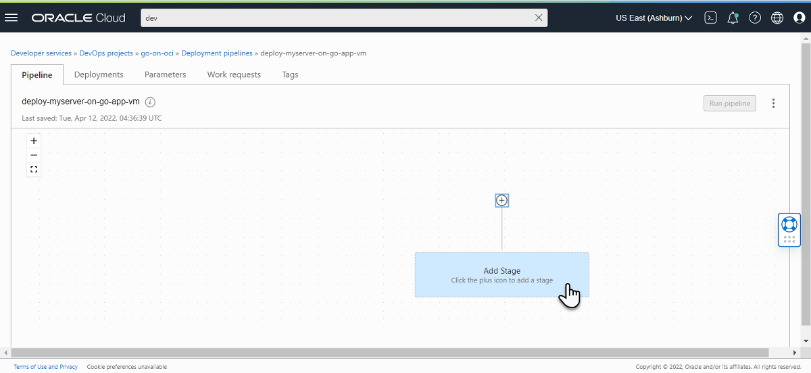
            </picture>

<p>In the pipeline editor that appears, click on the <em>Add Stage</em> tile (or on the plus icon). The next page shows a list of stage types. Click on the tile labeled <em>Deploy incrementally through Compute instance groups</em>; although a mouthful it simply means (for our purpose): deploy stuff onto a single VM.</p>

<picture class="aligncenter">
                <source srcset="assets/way-to-go-on-oci-article-2-select-stagetype.png 1x" />
                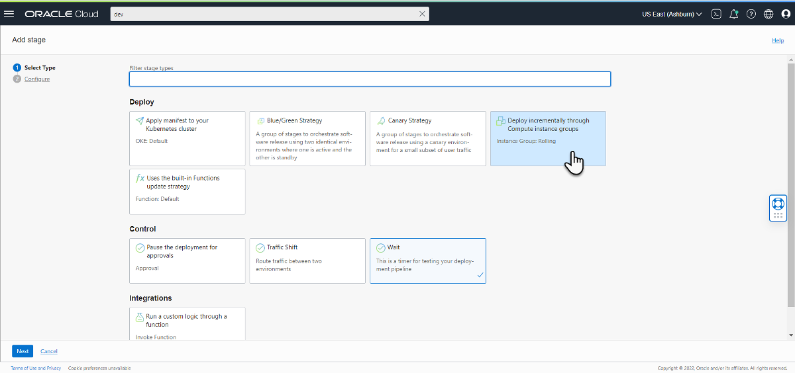
            </picture>

<p>Press button <em>Next</em>.</p>

<p>Type the stage name, for example <em>deploy-myserver-to-vm</em>. Select the environment that was defined earlier for the target VM: <em>go-on-oci-vm</em>.</p>

<p>Under <em>Deployment configuration</em>, click on <em>Add Artifact</em>. A list of all artifacts in the DevOps project of type <em>Instance group deployment configuration</em> is presented. Select the only entry – that was created earlier. Press button <em>Save changes</em> to associate this deployment configuration with the deployment stage.</p>

<p>Note that the button <em>Add Artifact</em> is no longer enabled: only a single deployment configuration can be defined in a stage.</p>

<p>To specify the artifact(s) that are to be taken from an artifact store and put into the target environment, click on the second button labeled <em>Select Artifact</em>. Select the <em>my-server</em> artifact that was added to the DevOps project, representing the similarly named artifact <em>my-server.zip:1.0</em> in the Artifact Registry repository <em>go-on-oci-artifacts-repo</em>. Click on <em>Save Changes</em>.</p>

<p>Toggle radio group <em>Rollout policy</em> – not useful in our case with only a single Compute instance as deployment target – to <em>Rollout by count</em> and type <em>1</em> in the field <em>Instance rollout by count</em>. Then click on button <em>Add</em>.</p>

<p>The pipeline stage is created in the pipeline. And the pipeline can now be executed – to retrieve the zip file with the my-server application from the artifact repository, download zipfile and extract its contents in the target VM and run the application as background process. When the deployment pipeline is done running, the application should be serving HTTP requests.</p>

<p>Click on button <em>Run pipeline</em>.  A page with an overview of the manual run of the deployment pipeline. It allows you to set a name – to indicate the specific significance of this particular deployment. Parameter values can now be provided for use in this run of the deployment pipeline. Our pipeline does not currently have any such parameters defined so we can not set any values. In the future, we might well use parameters, for example to define the prefix for log output or the port on which <em>my-server</em> should listen for HTTP requests – set as an environment variable or startup parameter in the deployment configuration.  Now press button <em>Start manual run</em>. The deployment is started. An email is sent to the address that you subscribed on the notification topic, to alert you of the start of the run. A second mail will be sent to let you know about the result of the run.</p>

<p>The next figure shows the configuration of the Deployment Pipeline in conjunction with the other OCI resources it depends on. The configuration</p>
<picture class="aligncenter">
                <source srcset="assets/way-to-go-on-oci-article-2-deployment-pipeline-diagram.png 1x" />
                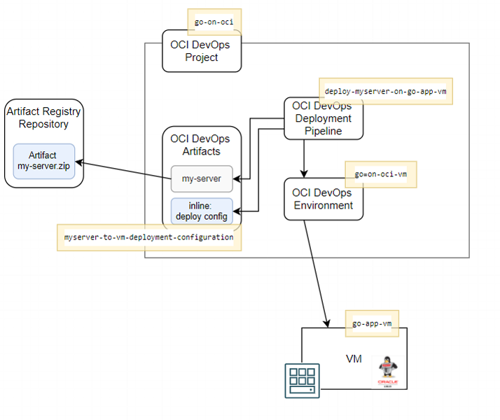
            </picture>

<p>When the deployment is finished successfully, send an HTTP request – with curl or from a browser – to port 8080 at the public IP of the VM:</p>

<div class="language-plaintext highlighter-rouge"><div class="highlight"><pre class="highlight"><code>http://&lt;public ip of the Compute instance&gt;:8080/greet?name=Success
</code></pre></div></div>

<p>When you receive a response to this request – as you should – it proves that the deployment has succeeded. Starting from zip file containing the binary executable of our Go application, without our hands touching the VM, we managed to apply some fine automation and bring the application alive. The deployment pipeline, targeted at the proper environment, leveraging the right artifact and steered by the proper deployment configuration managed to pull it off. Note however that the application is not auto-healing and will not automatically start when the VM is rebooted. We can configure the application as a Linux service that should automatically be started – and we will do so when we put together the build pipeline for a somewhat more sophisticated application. At that point we will also make use of dynamically defined port for the application to listen on instead of the hard coded port 8080 that is currently used.</p>

<p>Using the next URL path</p>

<div class="language-plaintext highlighter-rouge"><div class="highlight"><pre class="highlight"><code>http://&lt;public ip of the Compute instance&gt;:8080/site/deployment-log.txt
</code></pre></div></div>

<p>you are able to inspect the first few log entries from the deployment pipeline itself. This file is copied to the static website directory of my-server in the first step in the deployment configuration. The files indicates the directory on the Compute instance where the detailed logs are written: <em>Deployment Log for deploymentId ocid1…. is created at /var/lib/ocarun/commands/wd/…./stdout</em>. Note: root access is required to read this file.</p>

<p>The deployment pipeline can do several additional things. Take parameter values we specify for each deployment and replace placeholders in the deployment pipeline and the deployment configuration with these values. Ask a user’s approval to proceed. Run additional stages – sequentially or in parallel.  Do a blue/green or canary release to a group of Compute instances.</p>

<p>You would be forgiven for thinking that this has been quite a lot of work for what is really a simple installation. If you would do this installation only once, then creating an SSH connection as we did in part one of this series and just performing the installation steps manually would be much more efficient than creating this pipeline to perform the installation. When however you want to install the application on multiple Compute instances that you not have SSH access to or you want to install the application multiple times, whenever a new version of the application becomes available and you want colleagues without Linux skills or access privileges to be able to perform the installation, having this deployment pipeline slowly begins to make sense. Once you know the steps in the pipeline are correct, the deployment can be run in a fully automatic manner without the risk of human errors, abuse of access privileges, lack of audit trail, lengthy wait times because of unavailability of staff. Suddenly the concept of deployment pipelines is more and more enticing. Assuming much more involved deployment processes with additional installation steps, larger numbers of artifacts, more complex, perhaps parameter driven environment configuration – the value of automated deployment pipelines will be obvious.</p>

<p>To get a glimpse of this effect, you could quickly create a new Compute instance in the compartment. Then define a new environment in the DevOps project for this Compute instance and associate the Deployment Pipeline with this environment. Then run the pipeline. With just a few simple steps, you have made the application run on this second Compute instance. Without resorting to SSH connections and command line operations. In fact, through only a simple console based process that you can teach to fairly non-technical staff.</p>

<h2 id="build-pipelines-for-automated-source-to-artifact-build-and-delivery">Build Pipelines for Automated Source to Artifact Build and Delivery</h2>

<p>In the previous section the artifact to be deployed was created manually and uploaded into the artifacts repository by hand. In the name of automation we want to use build pipelines for creating such artifacts.</p>

<p>Starting from the source code of the Go application, the build pipeline will enlist a build server, copy the relevant sources to that server, perform the linting, code analysis, compilation, testing and packaging steps and save the resulting deployable artifacts to the artifacts repository. The build pipeline can subsequently trigger the deployment pipeline to take those artifacts and deploy them to a specified environment. The build pipeline itself can be triggered manually or by an event such as a commit or a merge-to-master of a pull request in the code repository.</p>

<p>In this section we are going to create an OCI DevOps Build Pipeline. It is on the one hand associated with the Code Repository you have created in the DevOps Project and it delivers artifacts to the Artifact Registry repository on the other. The pipeline can contains for these activities:</p>
<ul>
  <li>Perform a managed build (execute build according to specification on a build server) a</li>
  <li>Deliver the output of a managed build stage to an Artifact Registry repository</li>
  <li>Wait (for a specified period of time)</li>
  <li>Trigger a Deployment Pipeline while passing parameters to it</li>
</ul>

<p>The Build Pipeline we will create next will take sources for a Go application from Code Repository, perform lint, test and compile on the application and package the application with its resources in a zip file. This file is the artifact that is published to the Artifact Registry. Subsequently, the Deployment Pipeline is triggered – to deliver this application to a Compute instance and make it run.</p>

<h3 id="prepare-code-repository">Prepare Code repository</h3>

<p>Our pipeline will have precious little to build at present, because our Code Repository is quite empty. The source you can work with are available from <a href="https://github.com/lucasjellema/go-on-oci-article-sources">the GitHub repository that has been prepared for this series of articles</a>. You will want to get these sources into your OCI Code Repository.</p>

<p>The easiest way of making that happen is simply by downloading the GitHub repo’s content as a zip file and extracting its contents into your local clone of the <em>go-on-oci-repo</em> Code Repository. Alternatively, create a clone of the GitHub repository and copy all content (except the <code class="language-plaintext highlighter-rouge">.git</code> directory) to the directory that has the local clone of <em>go-on-oci-repo</em>.</p>

<p>Then, when all sources are available as unstaged files in the local <em>go-on-oci-repo</em>, stage all files and commit. Then do a <code class="language-plaintext highlighter-rouge">git push</code>. To bring all the local files into the Code Repository on OCI.</p>

<p>You may feel like inspecting the sources through the console to make sure that they are now truly yours, safely held in your cloud based repository. And ready to be used in a build pipeline.</p>

<h3 id="assembling-the-build-pipeline">Assembling the Build Pipeline</h3>

<p>The Build Pipeline is a workflow definition, just like the deployment pipeline. It describes the steps to take whenever an automated build is required, the order for the steps and through parameters the context for the steps. It also describes the input – the sources from the code repository – and (where to store) the output. The real action happens in <em>managed build</em> stages, on a build server.</p>

<p>We will now first create the Build Pipeline and then add three stages to it: managed build, publish artifact and trigger deployment pipeline. Before we can run the pipeline we then also need to take care of permissions through a dynamic group and some policies.</p>

<h4 id="create-the-build-pipeline">Create the Build Pipeline</h4>

<p>On the overview page for DevOps Project <em>go-on-oci</em>, click on button <em>Create build pipeline</em>. A page is presented for specifying the name – say <em>build-myserver</em> – and a description. Press <em>Create</em> to have the build pipeline added to the DevOps Project.</p>

<p>Click on the link <em>build-myserver</em> in the list to navigate to the details page.</p>

<h4 id="first-stage-managed-build">First Stage: Managed Build</h4>

<p>The first stage in any build pipeline is a <em>Managed Build</em> stage. This stage provides instructions for the pipeline to get hold of a build server, copy specified sources from code repositories to the server and run through a number of actions on that server. At the time of writing, we can use a single image for the build server. It is an Oracle Linux image (8 GB memory, 1 OCPU) that has a number of pre installed tools and language run times. For example: Git, Docker, Helm, OCI CLI, Node.js, Java and Go are on the build runner image. For Go, the current version is 1.16.5. If the build process requires additional or different versions of technologies, you will have to make their installation part of the build process.</p>

<p>In the future, we will be able to choose between multiple build runner images (different composition and size) and bring our own images to use. Note: You are charged for using the compute shape (OCPU and memory) during the build run.</p>

<p>Reference <a href="https://docs.oracle.com/en-us/iaas/Content/devops/using/runtime_details.htm">OCI Docs – Build Runner Details</a></p>

<p>Click on either the plus icon or the <em>Add Stage</em> card. The two step <em>Add a stage</em> wizard appears. On step one in the wizard, make sure that the <em>Managed Build</em> card is selected for the type of stage. Press <em>Next</em>.</p>

<p>The second page is shown. Define a name for the build stage: <em>build-source-to-executable</em>. Optionally type a description.</p>

<p>At present we cannot select a different build image, so we settle for the one available, which is fine for our purposes. The default name and location for the build specification is correct: file <code class="language-plaintext highlighter-rouge">build_spec.yaml</code> in the root of the repository.</p>

<p>Click on the <em>Select</em> button under <em>Primary code repository</em>. We can now specify from which code repository the build will get its sources. Select <em>OCI Code Repository</em> as the <em>Source Connection Type</em>. Then select the <em>go-on-oci-repo</em> repository. We will work with source on the main branch, so do not change that default. Type <em>myserver-sources</em> as the value for <em>Build source name</em>. This managed build stage can use sources from multiple repositories. In the build specification, we can refer to each of these sources using the label defined as <em>Build source name</em>. Click on <em>Save</em>.</p>

<p>Press button <em>Add</em>. This completes the definition of the managed build stage. This is all it takes to take sources and process into artifacts.</p>

<p>Well, hang on, I hear you think. We may have indicated the sources to use, but we certainly did not say what to do with those sources. Whether any linting, testing, compilation and packaging into a zip file should be performed. And in fact – we did stipulate exactly what should happen on the build server. It is right there – in the <code class="language-plaintext highlighter-rouge">build-spec.yaml</code> file. We have not talked about that file yet and we certainly did not create it. But it pushed into the code repository and sitting there in the root directory of the project. It is this file that contains the instructions for the actual detailed steps executed on the build server.</p>

<div class="language-plaintext highlighter-rouge"><div class="highlight"><pre class="highlight"><code>version: 0.1
component: build
timeoutInSeconds: 6000
runAs: root
shell: bash
env:
  # these are local variables to the build config
  variables:
     SOURCE_DIRECTORY: "myserver-sources"

  # the value of a vaultVariable is the secret-id (in OCI ID format) stored in the OCI Vault service
  # you can then access the value of that secret in your build_spec.yaml commands
  vaultVariables:

  # exportedVariables are made available to use in sucessor stages in this Build Pipeline
  exportedVariables:
    - BUILDRUN_HASH


steps:
  - type: Command
    name: "Export variables"
    timeoutInSeconds: 40
    command: |
      export BUILDRUN_HASH=`echo ${OCI_BUILD_RUN_ID} | rev | cut -c 1-7`
      echo "BUILDRUN_HASH: " $BUILDRUN_HASH
      echo "SOURCE-DIRECTORY: " $SOURCE_DIRECTORY
      echo "${OCI_PRIMARY_SOURCE_DIR}" ${OCI_PRIMARY_SOURCE_DIR}
      echo "fully qual sources" ${OCI_WORKSPACE_DIR}/${SOURCE_DIRECTORY}
      echo "myserver-version from build pipeline parameter" ${MYSERVER_VERSION}
      go version

  - type: Command
    timeoutInSeconds: 600
    name: "Install golangci-lint"
    command: |
      curl -sSfL https://raw.githubusercontent.com/golangci/golangci-lint/master/install.sh | sh -s -- -b $(go env GOPATH)/bin v1.37.1

  - type: Command
    timeoutInSeconds: 600
    name: "Verify golangci-lint version"
    command: |
      /root/go/bin/golangci-lint version

  - type: Command
    timeoutInSeconds: 600
    name: "Run go mod tidy for Go Application"
    command: |
      go mod tidy

  - type: Command
    timeoutInSeconds: 600
    name: "Run go vet for Go Application"
    command: |
      go vet .

  - type: Command
    timeoutInSeconds: 600
    name: "Run gofmt for Go Application"
    command: |
      gofmt -w .

  - type: Command
    timeoutInSeconds: 600
    name: "Run Lint for Go Application"
    command: |
      /root/go/bin/golangci-lint run

  - type: Command
    timeoutInSeconds: 600
    name: "Run Unit Tests for Go Application (with verbose output)"
    command: |
      go test -v
  
  - type: Command
    timeoutInSeconds: 600
    name: "Build Go Application into Executable"
    command: |
      go build -o my-server

  - type: Command
    timeoutInSeconds: 600
    name: "Zip my-server Application Executable along with website"
    command: |
      zip -r my-server.zip website
      zip -rv my-server.zip my-server
  
outputArtifacts:
  - name: myserver-archive
    type: BINARY
    location: ${OCI_WORKSPACE_DIR}/${SOURCE_DIRECTORY}/my-server.zip
</code></pre></div></div>

<p>The build specification consists of three parts: 
    1. Setup – who to run the script as, which shell to use, which variables to use
    2. Build steps – Shell commands to execute on the build server
    3. Output Artifacts – indicate which files at the end of all build steps are meaningful and to be made available to other steps in the pipeline (for example to publish as artifact)</p>

<p>The build steps can be summarized as: 
    1. Print environment variables and currently installed Go version (on the vanilla build server)
    2. Install golangci-lint
    3. Verify success and version of golangci-lint installation
    4. Run <code class="language-plaintext highlighter-rouge">go mod tidy</code> to organize the go.mod file with dependencies
    5. Run <code class="language-plaintext highlighter-rouge">go vet</code> to run a first inspection on the Go Sources
    6. Run <code class="language-plaintext highlighter-rouge">go fmt</code> to format the sources according to generic formatting rules
    7. Run <code class="language-plaintext highlighter-rouge">golangci-lint</code> to lint (check) the sources against various linting rules
    8. Run unit tests
    9. Build sources into binary executable called <code class="language-plaintext highlighter-rouge">my-server</code>
    10. Create zip file <code class="language-plaintext highlighter-rouge">my-server.zip</code> with the <em>website</em> directory and the executable <code class="language-plaintext highlighter-rouge">my-server</code></p>

<p>If you are eager to see the managed build stage in action, you can skip the next two sections for now, define the dynamic group and the policies described under <em>IAM Policies</em> and then press the button <em>Start manual run</em>. The pipeline grinds into action. A build server is acquired, the build specification is located and the steps in the specification are executed. The logs are shown and provide insight into the proceedings. After a little while, the build is complete. An output is created on the build server but not yet published to the artifact registry. It will now be lost when the stateless build server gets reset for a next run by us or someone else entirely.</p>

<p>We will now define the stage that publishes the artifact, to allow us to really enjoy the fruits of our managed build.</p>

<p>Reference:
<a href="https://docs.oracle.com/en-us/iaas/Content/devops/using/build_specs.htm">OCI Documentation – Build Specification Reference</a></p>

<h4 id="second-stage-publish-artifact">Second Stage: Publish Artifact</h4>

<p>In the overview page for the build pipeline, click on the plus icon at the bottom of the current managed build stage. In the context menu that pops up, click on <em>Add stage</em>. The stage wizard appears.</p>

<p>Click on <em>Deliver artifacts</em>. Then click on <em>Next</em>.</p>

<p>Enter the name for this stage: <em>publish-myserver-as-artifact</em>. We need to select the artifact in the DevOps project that we want to publish. This artifact can be a container image in the image registry or a generic artifact in an artifact registry repository. The latter is the case. Click on button <em>Select artifact(s)</em>. Select the <em>my-server</em> artifact that we used previously in the deployment pipeline. We will have our build pipeline produce fresh updates of this artifact.</p>

<p>In the area <em>Associate artifacts with build result</em> we have to indicate for each of the artifacts selected which of the outcomes of a managed build stage is the source for publishing the artifact. The <em>build-spec.yaml</em> file defines an output labeled <em>myserver-archive</em>. This output refers to the my-server.zip file that is produced by the build process. Enter this label <em>myserver-archive</em> in the field <em>Build config/result artifact name</em>. The press the <em>Add</em> button to create the <em>Deliver Artifacts</em> stage.</p>

<p>If you feel like it – and already defined dynamic group and policies – you could press the <em>Start manual run</em> button. This time the build will not only create a zip file on the build server (that is then lost forever) but it will store that zip file in the artifact registry repository. The <em>Build run progress</em> will inform you about it. And when the run is complete and you check the <em>go-on-oci-artifacts-repo</em> repository in the Artifact Registry, you will find the file <em>my-server.zip</em> with a creation timestamp that is very close to now. This is the work of the build pipeline.</p>

<p>The deployment pipeline that we created earlier uses this very artifact as a starting point. With this freshly built artifact available, you can now manually start a run of the deployment pipeline to have the new Go application installed and started. Or you can wait a little bit longer and trigger the deployment pipeline from the a stage at the end of the build pipeline. When that is in place, triggering the build pipeline will result in an end to end build and deploy flow.</p>

<h4 id="third-stage-trigger-deployment-pipeline">Third Stage: Trigger Deployment Pipeline</h4>

<p>In the overview page for the build pipeline, click on the plus icon at the bottom of the <em>Deliver artifacts</em> stage. In the context menu that pops up, click on <em>Add stage</em>. The stage wizard appears.</p>

<p>Click on <em>Trigger deployment</em>. Then click on <em>Next</em>.</p>

<p>Type a name for the stage: <em>trigger-deployment-of-myserver</em> and optionally a description. Click on the button <em>Select deployment pipeline</em>. Select the pipeline <em>deploy-myserver-on-go-app-vm</em> (probably the only deployment pipeline there is to select). Details of the pipeline are shown – such as parameters (none defined at this point) and artifacts used by the deployment.</p>

<p>Click on button <em>Add</em> to complete the stage definition and add it to the build pipeline.</p>

<p>This completes the build pipeline: it grabs sources, processes them into a deployable artifact, publishes the artifact to the registry and triggers the deployment pipeline to take it from there. If you have not yet set up a dynamic group and IAM policies, you will do so in the next section. And then we can run the end to end process of build, delivery and deployment.</p>

<p>The next figure visualizes the build pipeline and its relation with the deployment pipeline.</p>

<picture class="aligncenter">
                <source srcset="assets/way-to-go-on-oci-article-2-build-and-deployment-pipelines.png 1x" />
                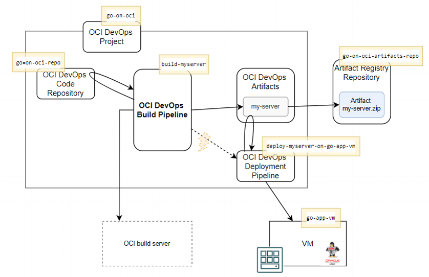
            </picture>

<h3 id="iam-policies">IAM Policies</h3>

<p>Build pipelines require permissions to do the things they’re supposed to do. They need to read from a Code Repository and publish artifacts to an Artifact Registry, and they need to trigger a deployment pipeline. For all these actions, the build pipeline has to be granted permission through a dynamic group – just like the deployment pipeline got its permissions.</p>

<h4 id="create-dynamic-group-for-the-build-pipelines">Create Dynamic Group for the Build Pipeline(s)</h4>

<p>To create the dynamic group, type <em>dyn</em> in the search bar. Click on the link <em>Dynamic Groups</em> in the search results pane.</p>

<p>On the overview page for dynamic groups, Click on the button <em>Create Dynamic Group</em>.</p>

<p>Enter the name for the Dynamic Group for the Deployment Pipeline(s), e.g. <em>build-pipelines-for-go-on-oci</em>, and optionally type a description. Define the following rule which selects all deployment pipelines that are part of the compartment (in this case we have not any deployment pipelines, but we soon will):</p>

<div class="language-plaintext highlighter-rouge"><div class="highlight"><pre class="highlight"><code>ALL {resource.type = 'devopsbuildpipeline', resource.compartment.id = '&lt;compartment_id&gt;'}
</code></pre></div></div>

<p>Of course, replace <code class="language-plaintext highlighter-rouge">&lt;compartment_id&gt;</code> with the identifier of the compartment you are working in. Then press <em>Create</em>.</p>

<p>It is convenient to define the dynamic group in this broad fashion – simply including all resources in the compartment of type build pipeline. In a realistic environment, I recommend defining dynamic groups and policies as fine-grained as possible so as to not grant more permissions than are needed.</p>

<h4 id="define-policies-that-bestow-rights-on-the-dynamic-group">Define Policies that Bestow Rights on the Dynamic Group</h4>

<table>
  <tbody>
    <tr>
      <td>To create a policy in the console, type <em>poli</em> in the search bar and click on *Policies</td>
      <td>Identity* in the <em>Services</em> area of the search results popup. This takes you to the <em>Policies</em> overview page for the current compartment.</td>
    </tr>
  </tbody>
</table>

<p>The first policy defines the permission for the build pipelines to deliver artifacts to the Artifact Registry. Define a name, a description and the following statement:</p>

<div class="language-plaintext highlighter-rouge"><div class="highlight"><pre class="highlight"><code>Allow dynamic-group build-pipelines-for-go-on-oci to manage all-artifacts in compartment go-on-oci
</code></pre></div></div>

<p>To send notifications for the build process, provide access to ONS (notification service) to the build pipelines:</p>

<div class="language-plaintext highlighter-rouge"><div class="highlight"><pre class="highlight"><code>Allow dynamic-group build-pipelines-for-go-on-oci to use ons-topics in compartment go-on-oci
</code></pre></div></div>

<p>And to allow the build pipelines to read deployment artifacts in the Deliver Artifacts stage, read DevOps code repository in the Managed Build stage, and trigger deployment pipelines:</p>

<div class="language-plaintext highlighter-rouge"><div class="highlight"><pre class="highlight"><code>Allow dynamic-group build-pipelines-for-go-on-oci to manage devops-family in compartment go-on-oci
</code></pre></div></div>

<p>With these policies in place, the build pipeline can be taken for a spin.</p>

<figure class="aligncenter">
              <picture>
                  <source srcset="assets/way-to-go-on-oci-article-2-dyngroup-and-policies-buildpipeline.png 1x" />
                  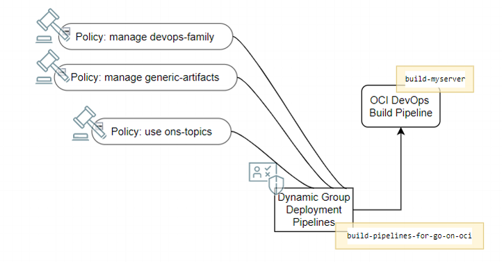
              </picture>
              <figcaption>Providing permissions to the build pipeline through a dynamic group and policies</figcaption>
            </figure>

<h3 id="run-the-build-pipeline">Run the Build Pipeline</h3>

<p>The Build Pipeline can be triggered by events in the Code Repository. Simple events such as commits or slightly more complex events like merging to a specific branch (such as merge of a pull request to the main or master branch) can be set up to trigger the pipeline. It can also be triggered manually from the console. That is what we’ll do next.</p>

<p>Click on <em>Start manual run</em> in the overview page for the build pipeline.</p>

<figure class="aligncenter">
              <picture>
                  <source srcset="assets/way-to-go-on-oci-article-2-start-build-run.png 1x" />
                  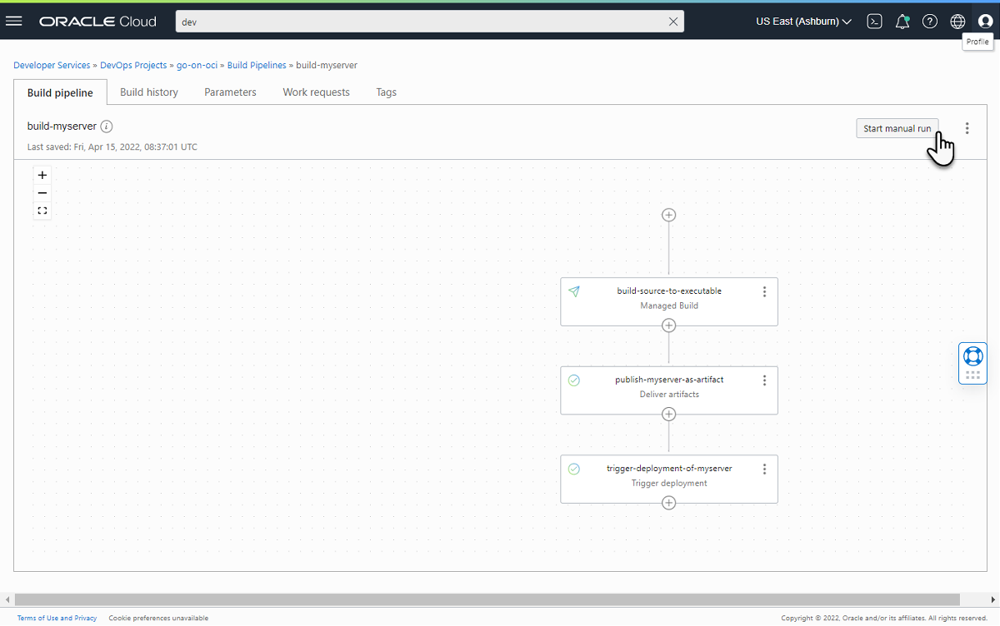
              </picture>
              <figcaption>Starting a run of the three stage build pipeline</figcaption>
            </figure>

<p>The build pipeline is kicked into action. It acquires a build server, retrieves the code and saves it on the build server. Then it performs the steps in the build specification. The outputs from this build process are published from the build server’s file system, uploaded to the Artifact Registry, where they will be waiting for the Deployment Pipeline to come along and fetch them. And indeed this is what happens next: the build pipeline’s final stage triggers the deployment pipeline. This has the artifact as its source and continues on to write the artifact to the Compute instance and perform the installation steps. You will receive emails about the start and completion of both the build pipeline and the triggered deployment pipeline. You may start to think about setting up routing rules to a specific mail folder for emails from OCI DevOps.</p>

<p>When the Build Pipeline is completed successfully, the triggered deployment can still be running… or can have failed miserably. The build pipeline does not hear back from the deployment pipeline. Once you see that the deployment pipeline has completed successfully, we should be able to access the application that was deployed based on the artifact built based on the sources in the code repository.</p>

<p>Validate if the application is indeed running.</p>

<div class="language-plaintext highlighter-rouge"><div class="highlight"><pre class="highlight"><code>http://&lt;public IP Compute instance&gt;:8080/....
</code></pre></div></div>

<h3 id="introducing-parameters">Introducing Parameters</h3>

<p>We want our sources, as well as our deployment artifacts, to be independent of their environment. The same artifacts can be deployed in different environments and work well, perhaps calling to different endpoints, listening to environment-specific ports, and writing to environment specific file system locations. At deployment time, the artifact can be combined with these environment-specific values.</p>

<p>OCI DevOps Deployment Pipelines support this way of working. You can use placeholders in the Deployment Configuration file and in artifacts; these placeholders are replaced at deployment time with the value of the corresponding parameters or secrets in the OCI Vault. Moreover, the version indication of artifacts can be defined using a placeholder which is replaced at deployment time by the actual value of a parameter.</p>

<p>Build pipelines can also work with parameters. Parameters can be used in the managed build – replacing placeholders in the build specification. A build pipeline parameter can also be used to determine the version label of the artifact that is published by the pipeline and this parameter can subsequently be leveraged in the deployment pipeline to fetch that exact artifact version to be deployed.</p>

<p>We will now make use of a parameter called <code class="language-plaintext highlighter-rouge">MYSERVER_VERSION</code> in three places:</p>

<ul>
  <li>in the custom path of a DevOps Project Artifact’s definition</li>
  <li>a parameter in the Deployment Pipeline</li>
  <li>a parameter in the Build Pipeline</li>
</ul>

<p>And to show off a little, the parameter can also be used in the <code class="language-plaintext highlighter-rouge">build_spec.yaml</code> (because any build pipeline parameter is available as an environment variable in the build server session) and the inline configuration definition (where environment variables in the deployment environment can be defined based on pipeline parameter values).</p>

<h4 id="placeholder-in-devops-artifact-version">Placeholder in DevOps Artifact Version</h4>

<p>In the DevOps project, go to the <em>Artifacts</em> tab. Click on three dots for the artifact called <em>my-server</em> and select <em>Edit</em> from the menu. The <em>Edit artifact</em> dialog appears.</p>

<p>Change <em>Artifact Location</em> to <em>Set Custom Location</em>. The field <em>Artifact Path</em> should have the value <em>my-server.zip</em> and the Version should be set to <code class="language-plaintext highlighter-rouge">${MYSERVER_VERSION}</code>. This value means that whenever the DevOps project refers to the artifact – from a Build Pipeline or a Deployment Pipeline – the specific version to use of the artifact is to be derived using the value of parameter <code class="language-plaintext highlighter-rouge">MYSERVER_VERSION</code>. As a consequence, any reference to the artifact at a time when there is no value set for a parameter with this name is meaningless.</p>

<p>Select <em>Yes, substitute placeholders</em> under <em>Replace parameters used in this artifact</em> to make sure that the value of the parameter is actually applied to compose the version (and <code class="language-plaintext highlighter-rouge">${MYSERVER_VERSION}</code> is not regarded as a simple string).</p>

<figure class="aligncenter">
              <picture>
                  <source srcset="assets/way-to-go-on-oci-article-2-edit-myserver-artifact-definition.png 1x" />
                  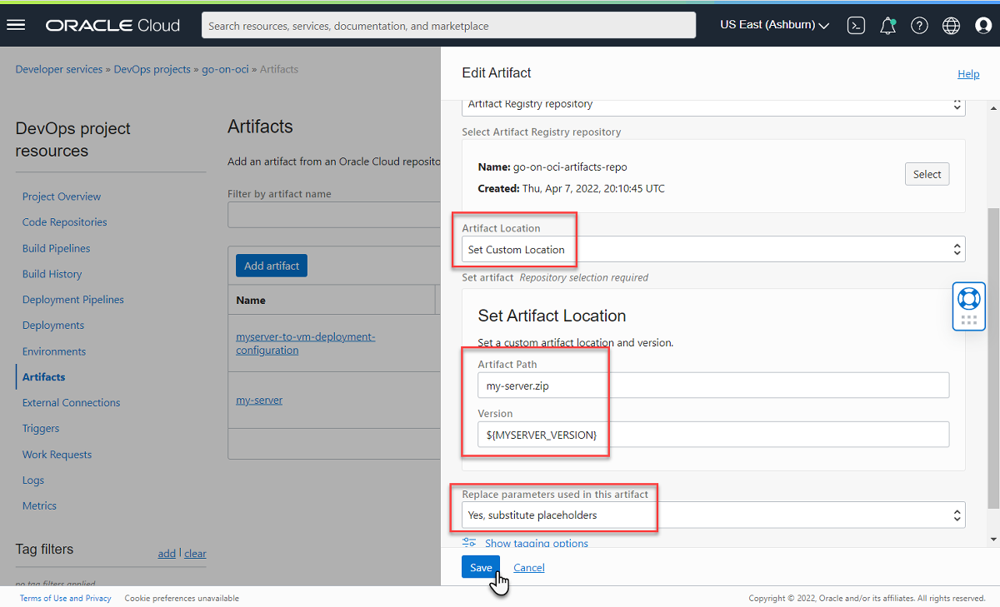
              </picture>
              <figcaption>Edit the DevOps Artifact myserver to dynamically select a version based on a parameter derived placeholder</figcaption>
            </figure>

<p>Press <em>Save</em> to apply the changes in the artifact definition.</p>

<h4 id="deployment-pipeline-parameter">Deployment Pipeline Parameter</h4>

<p>Deployment Pipelines can have parameters associated with them. These parameters have a name, a default value, and a description. When a run is started for a deployment pipeline, the default values of the parameters can be overridden, setting appropriate values for that specific deployment. The values for the parameters are used to resolve <code class="language-plaintext highlighter-rouge">${placeholder}</code> expressions which can be in the deployment specification, in the artifact’s version definition, and in the content body of any of the deployed artifacts.</p>

<p>To set parameter values, go to the <em>Parameters</em> tab on the Deployment Pipeline page. Add two parameters:</p>

<ol>
  <li><code class="language-plaintext highlighter-rouge">MYSERVER_VERSION</code> to define the version of the <em>my-server</em> artifact to deploy; set the default value to 4.8</li>
  <li><code class="language-plaintext highlighter-rouge">HTTP_SERVER_PORT</code> to define the port on which the my-server application will listen to incoming HTTP requests; set the default value to 8090</li>
</ol>

<figure class="aligncenter">
              <picture>
                  <source srcset="assets/way-to-go-on-oci-article-2-deployment-pipeline-parameters.png 1x" />
                  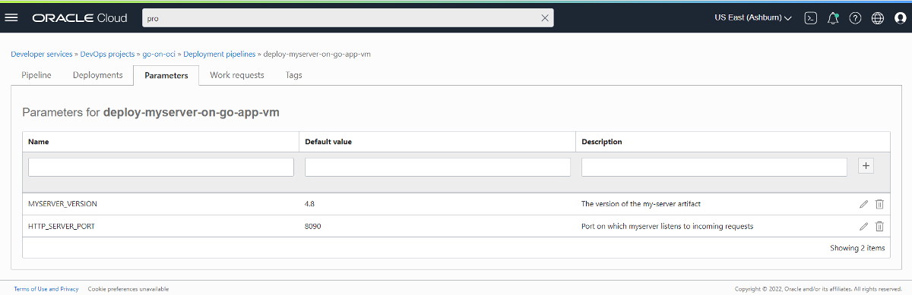
              </picture>
              <figcaption>Define parameters for the deployment pipeline</figcaption>
            </figure>

<p>The value for <code class="language-plaintext highlighter-rouge">MYSERVER_VERSION</code> is immediately meaningful: the next time you run the deployment pipeline, the artifact to retrieve for the deployment is found using the artifact definition in the DevOps project, with its path set to <code class="language-plaintext highlighter-rouge">my-server.zip</code> and version defined as <code class="language-plaintext highlighter-rouge">${MYSERVER_VERSION}</code>. The value for version is deduced using the value of the parameter.</p>

<p>If you run the deployment pipeline right now, it will fail because there is no artifact <code class="language-plaintext highlighter-rouge">my-server.zip</code> with version <code class="language-plaintext highlighter-rouge">4.8</code>. We need to update the build pipeline to produce that artifact (or go to the artifact repository and manually set the version label to this value).</p>

<p>The second parameter – <code class="language-plaintext highlighter-rouge">HTTP_SERVER_PORT</code> – has no effect yet. It is defined, and it is available when the deployment pipeline is started, but it is not yet used. We can change that.</p>

<p>Go to the Artifacts tab in the DevOps project. Click on the link <em>myserver-to-vm-deployment-configuration</em> for the inline artifact with the deployment configuration. Then click on <em>Edit</em> to update the configuration.</p>

<p>Add two environment variables, as shown next. This will cause two environment variables to be available during deployment, called <code class="language-plaintext highlighter-rouge">VERSION_OF_MYSERVER</code> and <code class="language-plaintext highlighter-rouge">HTTP_SERVER_PORT</code> with their values derived from the deployment pipeline parameters.</p>

<div class="language-yaml highlighter-rouge"><div class="highlight"><pre class="highlight"><code><span class="na">version</span><span class="pi">:</span> <span class="m">1.0</span>
<span class="na">component</span><span class="pi">:</span> <span class="s">deployment</span>
<span class="na">env</span><span class="pi">:</span>
  <span class="na">variables</span><span class="pi">:</span>
    <span class="na">VERSION_OF_MYSERVER</span><span class="pi">:</span> <span class="s">${MYSERVER_VERSION}</span>
    <span class="na">HTTP_SERVER_PORT </span><span class="pi">:</span> <span class="s">${HTTP_SERVER_PORT}</span>
<span class="na">files</span><span class="pi">:</span>
</code></pre></div></div>

<p>The environment variable <code class="language-plaintext highlighter-rouge">HTTP_SERVER_PORT</code> is meaningful: it is read in the <em>my-server</em> application and interpreted as the HTTP port on which the application is listening to incoming HTTP requests. The default value that was used until now is <em>8080</em>. With the environment variable now set from the pipeline parameter that has <em>8090</em> as its default value, things will change upon the next deployment: the application will listen on port 8090 – as it states in the deployment log. In the same line, the application also indicates its own version. That information was read from environment variable <code class="language-plaintext highlighter-rouge">VERSION_OF_MYSERVER</code>.</p>

<p>To verify that the environment variables are set as desired, you can add this step to the deployment configuration, which will write the two environment variables to the output:</p>

<div class="language-plaintext highlighter-rouge"><div class="highlight"><pre class="highlight"><code>  - stepType: Command
    name: Report
    command: echo myserver version to install in this deployment $VERSION_OF_MYSERVER &amp;&amp; echo port to make the application listen to $HTTP_SERVER_PORT
    timeoutInSeconds: 60
  - stepType: Command
</code></pre></div></div>

<h4 id="build-pipeline-parameters">Build Pipeline Parameters</h4>

<p>Build pipeline parameters can be used during the build process. The parameters are available as environment variables on the build server during the execution of the build process. Additionally, when a deployment pipeline triggered from a build pipeline has parameters with the same name as parameters defined in the build pipeline, then the value set to the build pipeline parameter is passed to the deployment pipeline and used for the corresponding parameter. This is used, for example, to pass the value of the parameter that identified the artifact version.</p>

<p>Go to the <em>Parameters</em> tab for the Build Pipeline. Define a new parameter called <code class="language-plaintext highlighter-rouge">MYSERVER_VERSION</code>. Its description can be something like “Version of the myserver artifact that is produced.” The default value can be set to <em>4.8</em> (or anything else). When you run a build pipeline, you can override the default value for every parameter.</p>

<figure class="aligncenter">
              <picture>
                  <source srcset="assets/way-to-go-on-oci-article-2-buildpipeline-parameter.png 1x" />
                  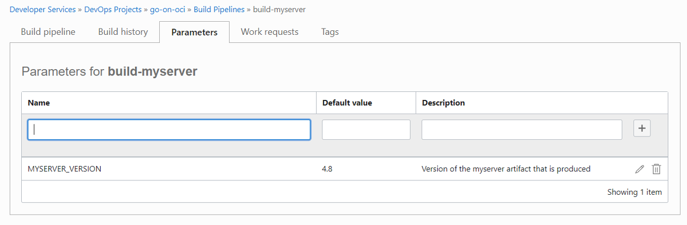
              </picture>
              <figcaption>Define a build pipeline parameter to define the version of the artifact to publish</figcaption>
            </figure>

<h4 id="end-to-end-parametrized-build-and-deployment">End to End Parametrized Build and Deployment</h4>

<p>By defining the parameter <code class="language-plaintext highlighter-rouge">MYSERVER_VERSION</code> for both the build pipeline and the deployment pipeline as well as in the artifact’s version label, we have tied the two pipelines together. When we run the Build Pipeline and set the value for <code class="language-plaintext highlighter-rouge">MYSERVER_VERSION</code> to a value such as <em>4.8</em> (or any other version label like string) then the build pipeline will produce the <em>my-server.zip</em> artifact with the version set to that value and the deployment pipeline will take that artifact version as its source for the deployment. During build – as well as during deployment – environment variables are available based on the parameter(s) defined for the pipeline.</p>

<figure class="aligncenter">
              <picture>
                  <source srcset="assets/way-to-go-on-oci-article-2-end-to-end-parameters-in-build-and-deploypipeline.png 1x" />
                  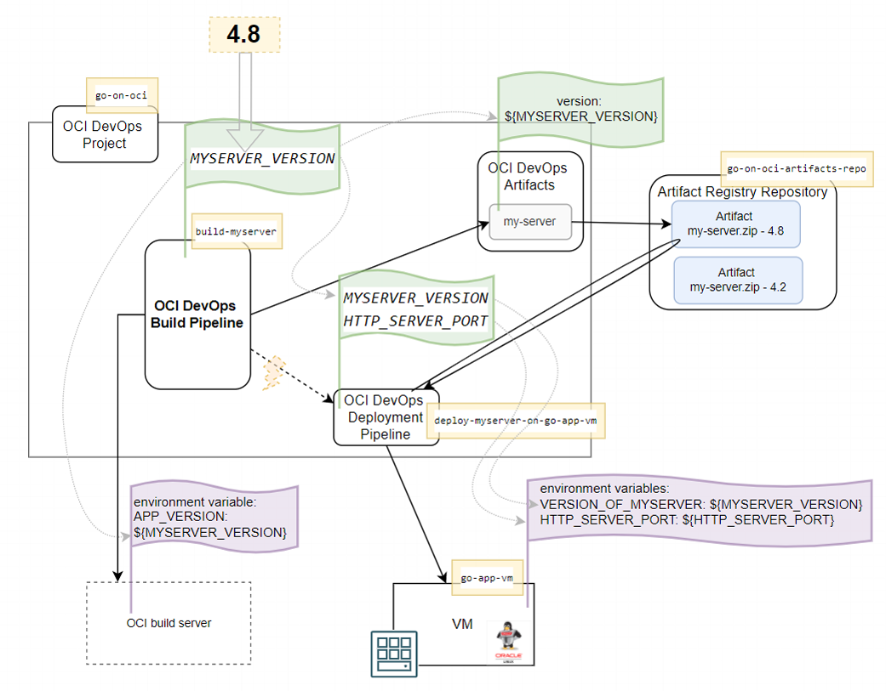
              </picture>
              <figcaption>Visualizing the parameters (MYSERVER_VERSION and HTTP_SERVER_PORT) and how and where they are used</figcaption>
            </figure>

<p>Run the build pipeline, and when prompted, provide a value for the parameter <code class="language-plaintext highlighter-rouge">MYSERVER_VERSION</code>. It can be 4.8, but 5.7 or 9.3 or anything else is fine, too.</p>

<p>Inspect the logging for both the build pipeline and the deployment pipeline for the appearances of the environment variables. One of the final log lines in the deployment log reads: <em>Starting my-server (version 4.8) listening for requests at port 8090</em> . The version indicated depends on the value you defined for the parameter <code class="language-plaintext highlighter-rouge">MYSERVER_VERSION</code>. The port similarly depends on the parameter <code class="language-plaintext highlighter-rouge">HTTP_SERVER_PORT</code>.</p>

<p>Note that any port different from 8080 has a consequence: the <code class="language-plaintext highlighter-rouge">myserver</code> friendly greet service is currently not accessible from outside the Compute instance. For port 8080, we have defined an Ingress rule in the subnet’s network security list (in part one of this series) and we have added this port to the firewall on the VM. With the application listening on a different port, we have to make sure that this port is opened up in a way similar to port 8080. Feel free to do so, or to revert back to port 8080 by changing the value of deployment pipeline parameter <code class="language-plaintext highlighter-rouge">HTTP_SERVER_PORT</code> to 8080 and running the pipeline again.</p>

<blockquote class="notice">
  <p>Note: Opening up the port in the Compute instance’s firewall rules can be accomplished as part of the deployment by adding this step to the deployment configuration:</p>

  <div class="language-plaintext highlighter-rouge"><div class="highlight"><pre class="highlight"><code> * stepType: Command
  name: Report
  runAs: root
  command: firewall-cmd  --permanent --zone=public --add-port=${HTTP_SERVER_PORT}/tcp &amp;&amp; firewall-cmd  --reload
  timeoutInSeconds: 60
</code></pre></div>  </div>
</blockquote>

<p>However, this command requires <em>sudo</em> permissions, and this means that you must grant <em>sudo</em> permissions to the Compute Instance Run Command plugin to be able to run the command. The plugin runs as the <code class="language-plaintext highlighter-rouge">ocarun</code> user and this user must be explicityly allowed to run all commands as <em>sudo</em>. See for details on how to realize this: <a href="https://docs.oracle.com/en-us/iaas/Content/Compute/Tasks/runningcommands.htm#administrator-privileges">OCI Documentation – Running Commands with Administrator Privileges</a>.</p>

<h2 id="api-gateway-exposing-your-server-to-the-world">API Gateway: Exposing Your Server to the World</h2>

<p>Even though the Compute instance to which the <code class="language-plaintext highlighter-rouge">myserver</code> application has been deployed has a public IP address, the service is currently not accessible from the outside. The network security that was set up in the first installment in this series allowed traffic to port 8080, but not to 8090. We don’t want any traffic directly to our production servers, and public IP addresses for Compute instances are not generally a good idea.</p>

<p>Services that should be accessible to consumers outside our cloud tenancy should be published as APIs on an API Gateway. Not only can we protect the VM from network traffic from the public internet, we also encapsulate our service’s location and implementation, allowing us to change such implementation details without impacting the consumers of the API. Additionally, the API Gateway allows us to aggregate services into a single API, use better paths, headers and parameters, and enforce authorization. The API Gateway can perform request and response manipulation, enforce throttling rules to protect the backend service, and provide detailed insight in the usage of the API.</p>

<p>Without going into all features the API Gateway offers, we will create an API Gateway with a Deployment that has a single route for exposing the service offered by application <code class="language-plaintext highlighter-rouge">myserver</code>, built from the Go application sources and deployed to the Compute instance.</p>

<figure class="aligncenter">
              <picture>
                  <source srcset="assets/way-to-go-on-oci-article-2-apigw-to-apponvm2.png 1x" />
                  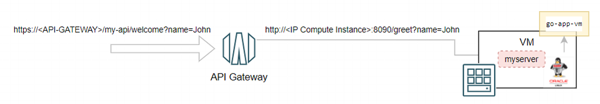
              </picture>
              <figcaption>The route on API Gateway is triggered by an incoming HTTP request and uses the backend service on the VM to get a response for the requestor</figcaption>
            </figure>

<h3 id="create-api-gateway">Create API Gateway</h3>

<table>
  <tbody>
    <tr>
      <td>Type <em>gat</em> into the search bar in the console. Click on the link *Gateways</td>
      <td>API Management*.</td>
    </tr>
  </tbody>
</table>

<p>Click on the button <em>Create Gateway</em>. Enter a name for the new gateway, for example <em>the-api-gateway</em>. Accept the type <em>Public</em>. Select the same VCN used for the Compute instance and the same public subnet and do not enable network security groups. Accept the default setting under Certificate. Press <em>Create Gateway</em>.</p>

<figure class="aligncenter">
              <picture>
                  <source srcset="assets/way-to-go-on-oci-article-2-create-api-gateway.png 1x" />
                  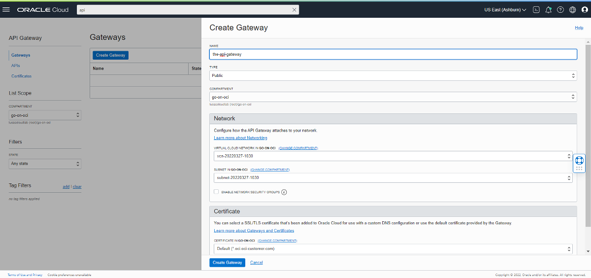
              </picture>
              <figcaption>Create an OCI API Gateway</figcaption>
            </figure>

<blockquote class="notice">
  <p>Note: we are doing a very simple deployment using the smallest number of OCI cloud resources we can get away with. In a real world scenario, we would most probably not have the API Gateway on the same subnet as the Compute instance it is routing to  because we’re trying to achieve insulation of the backend VM from the public internet using the front end API Gateway.</p>
</blockquote>

<h3 id="create-deployment">Create Deployment</h3>

<p>The API Gateway will now be created. Once that has been done, navigate to the <em>Deployments</em> tab. A Deployment on an API Gateway is a collection of (incoming) routes that are mapped to backend services to handle requests. Click on the button <em>Create Deployment</em>.</p>

<figure class="aligncenter">
              <picture>
                  <source srcset="assets/way-to-go-on-oci-article-2-create-deployment.png 1x" />
                  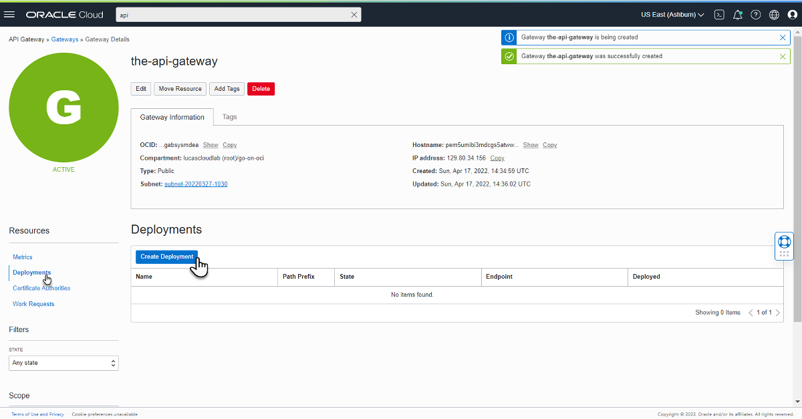
              </picture>
              <figcaption>Initiate creation of a  Deployment -- a collection of routes</figcaption>
            </figure>

<p>The first page of a three-page wizard appears. Here we define the name of the deployment, e.g. <em>myserver-api</em>, and the path prefix used by all API Gateway requests to be handled in this deployment. For example: <code class="language-plaintext highlighter-rouge">/my-api</code>.</p>

<figure class="aligncenter">
              <picture>
                  <source srcset="assets/way-to-go-on-oci-article-2-create-deployment-1.png 1x" />
                  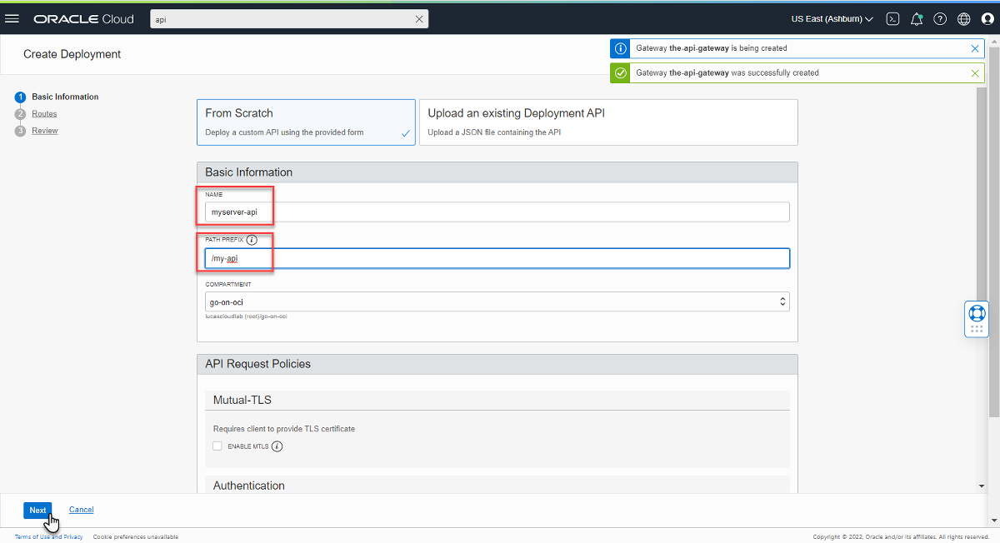
              </picture>
              <figcaption>Step 1 -- Basic Information for the Deployment -- and settings that apply to all routes</figcaption>
            </figure>

<p>Click on <em>Next</em> to move to the second page in the wizard.</p>

<p>On this page, we define each of the routes this deployment will take care of. Let’s start by defining just a single one. Type <em>/welcome</em> as the path. This means that requests to the API Gateway looking like <code class="language-plaintext highlighter-rouge">https://&lt;URL for API Gateway&gt;/my-api/welcome</code> will be handled by this route.</p>

<p>Select the <em>GET</em> method – the only HTTP method this route will be able to handle.</p>

<p>Accept the Type <em>HTTP</em>. In the <em>URL</em> field type the HTTP endpoint for the service exposed by <code class="language-plaintext highlighter-rouge">myserver</code> on the Compute instance. At this moment, it is the same endpoint you have used in the browser to access the service, because right now the Compute instance has a public IP and the network configuration allows that direct traffic. With the API Gateway handling the inbound traffic, we can restrict network access to the VM, as long as the API Gateway can make requests to it.</p>

<figure class="aligncenter">
              <picture>
                  <source srcset="assets/way-to-go-on-oci-article-2-createdeployment2.png 1x" />
                  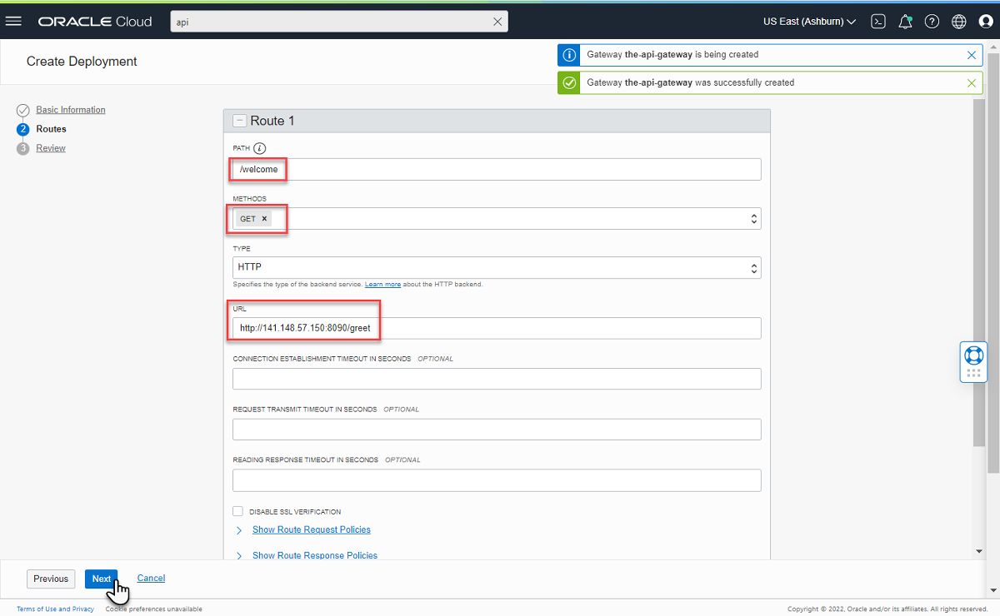
              </picture>
              <figcaption>Define a route in the deployment -- to handle of a specific URL path and HTTP methods using a specific backend</figcaption>
            </figure>

<p>Click on button <em>Next</em> to go to an overview of the definition of the deployment. Click on <em>Save</em> on this third page to create deployment with its single route.</p>

<blockquote class="notice">
  <p>It takes a little while for the API Gateway to be updated with the deployment.</p>
</blockquote>

<figure class="aligncenter">
              <picture>
                  <source srcset="assets/way-to-go-on-oci-article-2-createdeployment4.png 1x" />
                  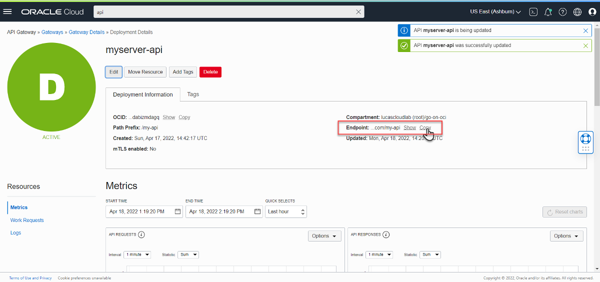
              </picture>
              <figcaption>The deployment has been created and activated and the public endpoint is available</figcaption>
            </figure>

<h3 id="update-network-security-and-invoke-api">Update Network Security and Invoke API</h3>

<p>On the Deployment Details page you’ll find the (public) <em>Endpoint</em> for the deployment. CLick on the <em>Copy</em> link. Now paste the link in your browser’s address bar, add <code class="language-plaintext highlighter-rouge">/welcome</code> to the URL, and press enter.</p>

<div class="language-plaintext highlighter-rouge"><div class="highlight"><pre class="highlight"><code>https://&lt;URL for API Gateway&gt;/my-api/welcome
</code></pre></div></div>

<p>This probably will not give the expected result, at least not if you expected success.</p>

<p>The request we sent to the API Gateway is sent over HTTPS to the default HTTPS port of 443. The public subnet that we associated with the API Gateway was configured in the previous installment of the series to allow inbound traffic for port 20-22 (for SSH connections) and for port 80 (plain HTTP traffic). We now need to extend that definition to also allow ingress traffic to port 443.</p>

<picture class="aligncenter">
                <source srcset="assets/way-to-go-on-oci-article-2-http-serverport-network-rules.png 1x" />
                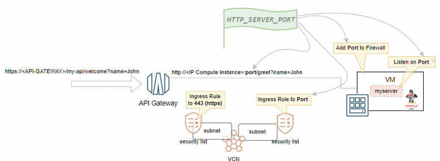
            </picture>

<p>Type <em>net</em> in the search bar and click on link <em>Virtual Cloud Networks</em> in the services list. Click on the <em>VCN</em> that was created earlier and subsequently on the <em>Subnet</em> that was associated to the API Gateway. Click on the <em>Security List</em>. Click on <em>Add Ingress Rule</em>.</p>

<p>Define a new Ingress Rule with <em>Source CIDR</em> set to <code class="language-plaintext highlighter-rouge">0.0.0.0/0</code>, <em>Destination Port Range</em> set to <code class="language-plaintext highlighter-rouge">443</code>, and optionally a description of the rule. Press button <em>Add Ingress Rules</em> to save the new rule.</p>

<p>Now try again once more to access the <code class="language-plaintext highlighter-rouge">/welcome</code> route on the API from your browser:</p>

<div class="language-plaintext highlighter-rouge"><div class="highlight"><pre class="highlight"><code>https://&lt;URL for API Gateway&gt;/my-api/welcome
</code></pre></div></div>

<p>This time around, you should get the expected response.</p>

<p>Adding a query parameter:</p>

<div class="language-plaintext highlighter-rouge"><div class="highlight"><pre class="highlight"><code>https://&lt;URL for API Gateway&gt;/my-api/welcome?name=No+Stranger
</code></pre></div></div>

<p>Requests to the public endpoint of the API Gateway and with the configured path prefix of <code class="language-plaintext highlighter-rouge">my-api</code> and the one supported route of <code class="language-plaintext highlighter-rouge">welcome</code> are forwarded to the API Gateway to the <code class="language-plaintext highlighter-rouge">myserver</code> application on the Compute instance, and the request is returned to us. In the next section we will show one example of request manipulation in the API Gateway.</p>

<h4 id="connecting-api-gateway-to-a-private-compute-instance">Connecting API Gateway to a private Compute Instance</h4>

<p>Because of our earlier work with the <code class="language-plaintext highlighter-rouge">go-app-vm</code> Compute instance, it has a public IP and is associated with a subnet that allows all kinds of inbound network traffic from any source on the public internet. However, in reality it will be more likely that we create a Compute instance that has no public IP and is associated only with a private subnet. In that case, the following are the high level steps to configure the API Gateway to route requests to the VM as a backend for an API route. There are three elements that need to be addressed.</p>

<ol>
  <li><em>Firewall on the VM</em> : as before, make sure that the appropriate ports are added to the firewall on the VM (as we have seen and done before)</li>
  <li><em>Network Route Table</em>: configure the network route table to make sure that traffic can route between the public subnet with which the API Gateway is associated and the private subnet to which the VM is linked</li>
  <li><em>Network Security Groups (NSG)</em>: create an NSG for the VM and one for the API Gateway. Add an ingress rule for the VM’s NSG to allow traffic from the NSG defined for the API Gateway and, on the latter NSG, an egress rule to allow traffic to the VM’s NSG. You can allow all ports, or limit it to the specific port(s) on which the service in the VM listens. The great thing about NSG is that you do not need to worry about IP addresses of the API Gateway or VM: just attach the NSG to the gateway and the VM with the rules in place and it will be configured.</li>
</ol>

<h3 id="one-tiny-little-bit-of-api-gateway-magic">One Tiny Little Bit Of Api Gateway Magic</h3>

<p>The OCI API Gateway can help us in many ways with handling requests. From authorization, validation, and throttling to transformation of headers and parameter, routing and reporting, as well as caching. To give you a little taste of that, let’s configure the deployment route to set a default value for the <code class="language-plaintext highlighter-rouge">name</code> query parameter if no value is provided in the request.</p>

<p>At the moment, when the URL is invoked without a query parameter called <code class="language-plaintext highlighter-rouge">name</code></p>

<div class="language-plaintext highlighter-rouge"><div class="highlight"><pre class="highlight"><code>https://&lt;URL for API Gateway&gt;/my-api/welcome
</code></pre></div></div>

<p>the response will be <em>Hello Stranger!</em></p>

<p>We will change that behavior, and ensure the response will be <em>Hello Friend!</em>. We can define validations and transformations on query parameters and headers. One simple transformation allows us to set a value for a query parameter if no value was set already. The API Gateway maybe called without query parameter <code class="language-plaintext highlighter-rouge">name</code> but in that case we will make sure the request to <code class="language-plaintext highlighter-rouge">myserver</code> will have that parameter, with the appropriate value of <em>Friend</em>.</p>

<p>Go to the details page for the (API) deployment <em>myserver-api</em>. Click on <em>Edit</em>. Go to the second page with <em>Routes</em>. Click on the link <em>Show Route Request Policies</em>. Click on the <em>Add</em> button under <em>Query Parameter Transformations</em>.</p>

<ul>
  <li><strong>Action</strong>: <em>Set</em></li>
  <li><strong>Behavior</strong>: <em>Skip</em> (do not change value when already set)</li>
  <li><strong>Query Parameter Name</strong>: <em>name</em></li>
  <li><strong>Value</strong>: <em>Friend</em></li>
</ul>

<figure class="aligncenter">
              <picture>
                  <source srcset="assets/way-to-go-on-oci-article-2-query-param-transform.png 1x" />
                  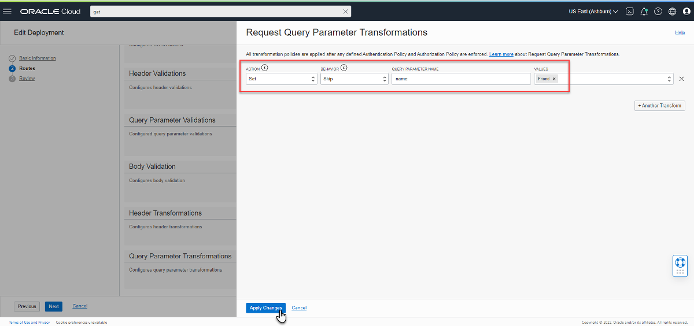
              </picture>
              <figcaption>Definition of a request query parameter transformation to provide a default value for the name parameter</figcaption>
            </figure>

<p>Click on <em>Apply Changes</em>. Then click button <em>Next</em>, then <em>Save Changes</em>. The deployment will be updated with the changes.</p>

<p>When done, try again to access the URL in the browser, without the <code class="language-plaintext highlighter-rouge">name</code> query parameter:</p>

<div class="language-plaintext highlighter-rouge"><div class="highlight"><pre class="highlight"><code>https://&lt;URL for API Gateway&gt;/my-api/welcome
</code></pre></div></div>

<p>The response should be <em>Hello Friend!</em>, thanks to the magic of the API Gateway Query Parameter Transformation.</p>

<h2 id="conclusion">Conclusion</h2>

<p>In this article, we continued our journey with Go on OCI. The main focus in this article was <em>automation</em>. Using the OCI DevOps services, we created pipelines for build and deployment of a Go application, from sources in the Code Repository to a deployed and running application on a Compute instance. We used API Gateway to expose our service in a decoupled way to external consumers for better security, reduced dependencies and improved operations. We saw a small example of API Gateway’s capabilities for validating and manipulating requests and responses.</p>

<p>In the next article, we will create Serverless Functions in Go and deploy them on OCI. And we will start using the Go SDK for OCI that enables us to interact with OCI services from Go applications. The first service will be the OCI Object Storage service for creating buckets and reading and writing files from a local Go application and from the Functions deployed to OCI.</p>

<h2 id="resources">Resources</h2>

<p><a href="https://github.com/lucasjellema/go-on-oci-article-sources">Source code repository for the sources discussed in this article series</a></p>

<p><a href="https://docs.oracle.com/en-us/iaas/Content/devops/using/create_project.htm#create_a_project">OCI Documentation – Create DevOps project </a></p>

<p><a href="https://docs.public.oneportal.content.oci.oraclecloud.com/en-us/iaas/Content/Compute/Tasks/runningcommands.htm">OCI Documentation – Running a Command on an Instance</a></p>

<p><a href="https://docs.oracle.com/en-us/iaas/Content/artifacts/iam-policies.htm">OCI Documentation – IAM Policies on Artifact Registry</a></p>


          <div class="sidebar sticky">
    <!-- <p><strong>Tags:</strong> <span class="tags">

            
            <a class="animated-link tag" href="/topics/open-source">open-source</a>
            <a class="animated-link tag" href="/topics/devops">devops</a>
            <a class="animated-link tag" href="/topics/get-started">get-started</a>
            <a class="animated-link tag" href="/topics/automation">automation</a>
            <a class="animated-link tag" href="/topics/back-end">back-end</a>
            <a class="animated-link tag" href="/topics/go">go</a>
            <a class="animated-link tag" href="/topics/iac">iac</a>
            </span>
    </p> -->
  


<div itemscope itemtype="https://schema.org/Person">

  

  <div class="author__content">
    
      <a href="https:/technology.amis.nl"><h3 class="author__name" itemprop="name">Lucas Jellema</h3></a>
    
    
      <div class="author__bio" itemprop="description">
        <p>developer, solution architect, blogger, Oracle Groundbreaker Ambassador, Oracle ACE Director</p>

      </div>
    
  </div>

  <div class="author__urls-wrapper">
    <ul class="author__urls social-icons">
      
        <li itemprop="homeLocation" itemscope itemtype="https://schema.org/Place">
          <i class="fas fa-fw fa-map-marker-alt" aria-hidden="true"></i> <span itemprop="name">The Netherlands</span>
        </li>
      

      

      

      
        <li>
          <a href="mailto:lucasjellema@gmail.com">
            <meta itemprop="email" content="lucasjellema@gmail.com" />
            <i class="fas fa-fw fa-envelope-square" aria-hidden="true"></i><span class="label">Email</span>
          </a>
        </li>
      

      

      
        <li>
          <a href="https://twitter.com/lucasjellema" itemprop="sameAs" rel="nofollow noopener noreferrer">
            <i class="fab fa-fw fa-twitter-square" aria-hidden="true"></i><span class="label">Twitter</span>
          </a>
        </li>
      

      

      
        <li>
          <a href="https://www.linkedin.com/in/lucasjellema" itemprop="sameAs" rel="nofollow noopener noreferrer">
            <i class="fab fa-fw fa-linkedin" aria-hidden="true"></i><span class="label">LinkedIn</span>
          </a>
        </li>
      

      

      

      

      

      
        <li>
          <a href="https://github.com/lucasjellema" itemprop="sameAs" rel="nofollow noopener noreferrer">
            <i class="fab fa-fw fa-github" aria-hidden="true"></i><span class="label">GitHub</span>
          </a>
        </li>
      

      

      

      

      

      

      

      

      

      

      

      

      

      

      
    </ul>
  </div>
</div>

  
  
  

  </div>


      </section>

      <footer class="page__meta">
        
        


        

  <p class="page__date"><strong><i class="fas fa-fw fa-calendar-alt" aria-hidden="true"></i> Updated:</strong> <time datetime="2022-05-26T11:00:00+00:00">May 26, 2022</time></p>


      </footer>
    </div>

  </article>
</div>

</div>

